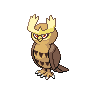
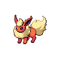
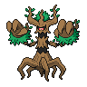

このページの数値は、公開されたTop8順位を使うV2の参考推定です。実際に観測された個別対戦の勝敗ではなく、将来の勝率でもありません。Swissの組合せ、参加者全体、Top8外の結果、決勝トーナメントの組合せは公開順位だけでは分かりません。弱い根拠の数値はその状態を明記した参考値です。未収束、prior only、利用不可、または状態未確認の対面は、誤解を避けるため数値を表示しません。
V2 対面推定 参考値
公開Top8順位を用いたV2の参考推定
作成日: 2026-10-03 JST
この数値の扱い
対象期間
2026-09-26 – 2026-10-01
完全Top8大会
69
partial大会
0
公開Top8枠
552
除外大会
0
対面の参考推定ヒートマップ
使用側は行、相手側は列です。灰色（）は数値を表示しない対面で、50%を補完していません。

全対面の参考値
表は横にスクロールできます
| 使用側 | 相手側 | V2-primary 順位制約の確定・可能範囲 | V2-secondary 参考推定 / 95%範囲 / 状態 |
|---|---|---|---|
【ドラパルトex】  | 【Nのゾロアークex】  | 順位制約で確定: 2試合 可能対戦数 3–30 / 可能範囲 0.0–83.3% | 41.6% 95%範囲 13.5–71.2% / 参考推定（弱い根拠） |
【ドラパルトex】 | 【ブルンゲルex】  | 順位制約で確定: 6試合 可能対戦数 7–36 / 可能範囲 19.0–86.4% | 55.7% 95%範囲 31.0–78.6% / 参考推定 |
【ドラパルトex】 | 【ヤドキング】  | 順位制約で確定: 4試合 可能対戦数 6–45 / 可能範囲 13.0–88.5% | 51.1% 95%範囲 27.5–74.0% / 参考推定 |
【ドラパルトex】 | 【おまつりおんど】  | 順位制約で確定: 2試合 可能対戦数 3–34 / 可能範囲 5.9–90.0% | 54.9% 95%範囲 26.6–81.1% / 参考推定（弱い根拠） |
【ドラパルトex】 | 【メガルカリオex】  | 順位制約で確定: 3試合 可能対戦数 5–25 / 可能範囲 6.7–73.3% | 34.2% 95%範囲 10.9–61.9% / 参考推定（弱い根拠） |
【ドラパルトex】 | 【メガフシギバナex】  | 順位制約で確定: 5試合 可能対戦数 5–37 / 可能範囲 15.0–90.9% | 59.2% 95%範囲 33.6–83.0% / 参考推定 |
【ドラパルトex】 | 【タケルライコex】  | 順位制約で確定: 2試合 可能対戦数 4–26 / 可能範囲 14.3–87.5% | 55.4% 95%範囲 26.8–82.2% / 参考推定（弱い根拠） |
【ドラパルトex】 | 【ダイゴのメタグロスex】  | 順位制約で確定: 2試合 可能対戦数 3–19 / 可能範囲 0.0–70.0% | 29.5% 95%範囲 5.7–61.4% / 参考推定（弱い根拠） |
【ドラパルトex】 | 【フーディン】  | 順位制約で確定: 1試合 可能対戦数 2–22 / 可能範囲 9.1–92.3% | 55.7% 95%範囲 23.4–85.6% / 参考推定（弱い根拠） |
【ドラパルトex】 | 【メガガルーラex】  | 順位制約で確定: 0試合 対戦有無不明（可能範囲は標準表示しません） | 55.2% 95%範囲 19.8–88.1% / 参考推定（弱い根拠） |
【ドラパルトex】 | その他  | 順位制約で確定: 未確認試合 可能範囲: 情報なし | 情報なし（状態未確認） 数値は表示しません |
【ドラパルトex】 | 【ゲッコウガex】  | 順位制約で確定: 0試合 対戦有無不明（可能範囲は標準表示しません） | 40.2% 95%範囲 7.4–80.5% / 参考推定（弱い根拠） |
【ドラパルトex】 | 【テラスタルバレット】  | 順位制約で確定: 0試合 対戦有無不明（可能範囲は標準表示しません） | 73.4% 95%範囲 36.4–96.3% / 参考推定（弱い根拠） |
【ドラパルトex】 | 【シロナのガブリアスex】  | 順位制約で確定: 0試合 可能対戦数 1–15 / 可能範囲 25.0–100.0% | 76.1% 95%範囲 45.8–96.1% / 参考推定（弱い根拠） |
【ドラパルトex】 | 【メガサメハダーex】  | 順位制約で確定: 2試合 可能対戦数 2–23 / 可能範囲 0.0–81.8% | 34.2% 95%範囲 7.4–66.8% / 参考推定（弱い根拠） |
【ドラパルトex】 | 【マリィのオーロンゲex】  | 順位制約で確定: 0試合 対戦有無不明（可能範囲は標準表示しません） | 59.5% 95%範囲 19.4–92.3% / 参考推定（弱い根拠） |
【ドラパルトex】 | 【メガスターミーex】  | 順位制約で確定: 0試合 対戦有無不明（可能範囲は標準表示しません） | 37.9% 95%範囲 6.0–81.1% / 参考推定（弱い根拠） |
【ドラパルトex】 | 【ブースターex】  | 順位制約で確定: 0試合 対戦有無不明（可能範囲は標準表示しません） | 59.3% 95%範囲 16.0–93.0% / 参考推定（弱い根拠） |
【ドラパルトex】 | 【イワパレス】  | 順位制約で確定: 0試合 可能対戦数 1–5 / 可能範囲 33.3–100.0% | 60.9% 95%範囲 21.0–93.4% / 参考推定（弱い根拠） |
【ドラパルトex】 | 【ソウブレイズex】  | 順位制約で確定: 0試合 対戦有無不明（可能範囲は標準表示しません） | 37.5% 95%範囲 6.5–78.1% / 参考推定（弱い根拠） |
【ドラパルトex】 | 【ロケット団のミュウツーex】  | 順位制約で確定: 0試合 可能対戦数 1–4 / 可能範囲 0.0–66.7% | 40.8% 95%範囲 7.7–81.3% / 参考推定（弱い根拠） |
【ドラパルトex】 | 【ロケット団のドンカラス】  | 順位制約で確定: 0試合 対戦有無不明（可能範囲は標準表示しません） | 51.3% 95%範囲 11.2–90.5% / 参考推定（弱い根拠） |
【ドラパルトex】 | 【ブリジュラスex】  | 順位制約で確定: 0試合 対戦有無不明（可能範囲は標準表示しません） | 51.6% 95%範囲 10.7–90.4% / 参考推定（弱い根拠） |
【ドラパルトex】 | 【メガディアンシーex】  | 順位制約で確定: 0試合 対戦有無不明（可能範囲は標準表示しません） | 情報なし（prior only） 数値は表示しません |
【ドラパルトex】 | 【イイネイヌ】  | 順位制約で確定: 0試合 対戦有無不明（可能範囲は標準表示しません） | 情報なし（prior only） 数値は表示しません |
【ドラパルトex】 | 【スピアーex】  | 順位制約で確定: 0試合 対戦有無不明（可能範囲は標準表示しません） | 47.9% 95%範囲 8.6–89.7% / 参考推定（弱い根拠） |
【ドラパルトex】 | 【メガカイリューex】  | 順位制約で確定: 0試合 対戦有無不明（可能範囲は標準表示しません） | 47.5% 95%範囲 9.1–88.8% / 参考推定（弱い根拠） |
【ドラパルトex】 | 【ニダンギル】  | 順位制約で確定: 0試合 対戦有無不明（可能範囲は標準表示しません） | 54.5% 95%範囲 12.1–91.9% / 参考推定（弱い根拠） |
【ドラパルトex】 | 【ホップのオーロット】  | 順位制約で確定: 0試合 対戦有無不明（可能範囲は標準表示しません） | 52.3% 95%範囲 10.3–91.3% / 参考推定（弱い根拠） |
【Nのゾロアークex】 | 【ドラパルトex】 | 順位制約で確定: 2試合 可能対戦数 3–30 / 可能範囲 16.7–100.0% | 58.4% 95%範囲 28.8–86.5% / 参考推定（弱い根拠） |
【Nのゾロアークex】 | 【ブルンゲルex】 | 順位制約で確定: 0試合 可能対戦数 1–9 / 可能範囲 14.3–100.0% | 51.1% 95%範囲 14.6–88.5% / 参考推定（弱い根拠） |
【Nのゾロアークex】 | 【ヤドキング】 | 順位制約で確定: 0試合 対戦有無不明（可能範囲は標準表示しません） | 39.0% 95%範囲 6.3–82.6% / 参考推定（弱い根拠） |
【Nのゾロアークex】 | 【おまつりおんど】 | 順位制約で確定: 0試合 対戦有無不明（可能範囲は標準表示しません） | 44.9% 95%範囲 8.2–86.3% / 参考推定（弱い根拠） |
【Nのゾロアークex】 | 【メガルカリオex】 | 順位制約で確定: 0試合 対戦有無不明（可能範囲は標準表示しません） | 55.8% 95%範囲 13.5–92.1% / 参考推定（弱い根拠） |
【Nのゾロアークex】 | 【メガフシギバナex】 | 順位制約で確定: 0試合 可能対戦数 1–13 / 可能範囲 0.0–75.0% | 23.5% 95%範囲 3.5–55.4% / 参考推定（弱い根拠） |
【Nのゾロアークex】 | 【タケルライコex】 | 順位制約で確定: 0試合 対戦有無不明（可能範囲は標準表示しません） | 45.7% 95%範囲 8.2–88.2% / 参考推定（弱い根拠） |
【Nのゾロアークex】 | 【ダイゴのメタグロスex】 | 順位制約で確定: 0試合 対戦有無不明（可能範囲は標準表示しません） | 50.1% 95%範囲 10.8–89.2% / 参考推定（弱い根拠） |
【Nのゾロアークex】 | 【フーディン】 | 順位制約で確定: 0試合 対戦有無不明（可能範囲は標準表示しません） | 39.2% 95%範囲 6.5–81.0% / 参考推定（弱い根拠） |
【Nのゾロアークex】 | 【メガガルーラex】 | 順位制約で確定: 0試合 対戦有無不明（可能範囲は標準表示しません） | 45.4% 95%範囲 8.1–87.0% / 参考推定（弱い根拠） |
【Nのゾロアークex】 | その他 | 順位制約で確定: 未確認試合 可能範囲: 情報なし | 情報なし（状態未確認） 数値は表示しません |
【Nのゾロアークex】 | 【ゲッコウガex】 | 順位制約で確定: 1試合 可能対戦数 1–5 / 可能範囲 33.3–100.0% | 63.3% 95%範囲 23.4–94.0% / 参考推定（弱い根拠） |
【Nのゾロアークex】 | 【テラスタルバレット】 | 順位制約で確定: 0試合 対戦有無不明（可能範囲は標準表示しません） | 47.0% 95%範囲 8.1–88.5% / 参考推定（弱い根拠） |
【Nのゾロアークex】 | 【シロナのガブリアスex】 | 順位制約で確定: 0試合 対戦有無不明（可能範囲は標準表示しません） | 46.9% 95%範囲 8.7–89.1% / 参考推定（弱い根拠） |
【Nのゾロアークex】 | 【メガサメハダーex】 | 順位制約で確定: 2試合 可能対戦数 2–5 / 可能範囲 0.0–50.0% | 38.5% 95%範囲 7.3–75.7% / 参考推定（弱い根拠） |
【Nのゾロアークex】 | 【マリィのオーロンゲex】 | 順位制約で確定: 1試合 可能対戦数 1–4 / 可能範囲 33.3–100.0% | 54.2% 95%範囲 15.8–90.7% / 参考推定（弱い根拠） |
【Nのゾロアークex】 | 【メガスターミーex】 | 順位制約で確定: 1試合 可能対戦数 1–6 / 可能範囲 50.0–100.0% | 68.4% 95%範囲 28.6–95.2% / 参考推定（弱い根拠） |
【Nのゾロアークex】 | 【ブースターex】 | 順位制約で確定: 0試合 対戦有無不明（可能範囲は標準表示しません） | 44.8% 95%範囲 7.5–87.4% / 参考推定（弱い根拠） |
【Nのゾロアークex】 | 【イワパレス】 | 順位制約で確定: 0試合 対戦有無不明（可能範囲は標準表示しません） | 52.9% 95%範囲 12.2–91.5% / 参考推定（弱い根拠） |
【Nのゾロアークex】 | 【ソウブレイズex】 | 順位制約で確定: 0試合 対戦有無不明（可能範囲は標準表示しません） | 46.1% 95%範囲 8.4–87.7% / 参考推定（弱い根拠） |
【Nのゾロアークex】 | 【ロケット団のミュウツーex】 | 順位制約で確定: 0試合 対戦有無不明（可能範囲は標準表示しません） | 55.8% 95%範囲 12.6–92.4% / 参考推定（弱い根拠） |
【Nのゾロアークex】 | 【ロケット団のドンカラス】 | 順位制約で確定: 0試合 対戦有無不明（可能範囲は標準表示しません） | 52.5% 95%範囲 10.5–91.8% / 参考推定（弱い根拠） |
【Nのゾロアークex】 | 【ブリジュラスex】 | 順位制約で確定: 0試合 対戦有無不明（可能範囲は標準表示しません） | 47.3% 95%範囲 8.5–89.2% / 参考推定（弱い根拠） |
【Nのゾロアークex】 | 【メガディアンシーex】 | 順位制約で確定: 0試合 対戦有無不明（可能範囲は標準表示しません） | 55.2% 95%範囲 12.6–92.3% / 参考推定（弱い根拠） |
【Nのゾロアークex】 | 【イイネイヌ】 | 順位制約で確定: 0試合 対戦有無不明（可能範囲は標準表示しません） | 情報なし（prior only） 数値は表示しません |
【Nのゾロアークex】 | 【スピアーex】 | 順位制約で確定: 0試合 対戦有無不明（可能範囲は標準表示しません） | 情報なし（prior only） 数値は表示しません |
【Nのゾロアークex】 | 【メガカイリューex】 | 順位制約で確定: 0試合 対戦有無不明（可能範囲は標準表示しません） | 47.9% 95%範囲 8.4–89.4% / 参考推定（弱い根拠） |
【Nのゾロアークex】 | 【ニダンギル】 | 順位制約で確定: 0試合 対戦有無不明（可能範囲は標準表示しません） | 情報なし（prior only） 数値は表示しません |
【Nのゾロアークex】 | 【ホップのオーロット】 | 順位制約で確定: 0試合 対戦有無不明（可能範囲は標準表示しません） | 情報なし（prior only） 数値は表示しません |
【ブルンゲルex】 | 【ドラパルトex】 | 順位制約で確定: 6試合 可能対戦数 7–36 / 可能範囲 13.6–81.0% | 44.3% 95%範囲 21.4–69.0% / 参考推定 |
【ブルンゲルex】 | 【Nのゾロアークex】 | 順位制約で確定: 0試合 可能対戦数 1–9 / 可能範囲 0.0–85.7% | 48.9% 95%範囲 11.5–85.4% / 参考推定（弱い根拠） |
【ブルンゲルex】 | 【ヤドキング】 | 順位制約で確定: 0試合 対戦有無不明（可能範囲は標準表示しません） | 70.9% 95%範囲 31.6–95.7% / 参考推定（弱い根拠） |
【ブルンゲルex】 | 【おまつりおんど】 | 順位制約で確定: 1試合 可能対戦数 1–9 / 可能範囲 25.0–100.0% | 65.8% 95%範囲 27.7–94.7% / 参考推定（弱い根拠） |
【ブルンゲルex】 | 【メガルカリオex】 | 順位制約で確定: 0試合 対戦有無不明（可能範囲は標準表示しません） | 49.3% 95%範囲 11.7–87.2% / 参考推定（弱い根拠） |
【ブルンゲルex】 | 【メガフシギバナex】 | 順位制約で確定: 1試合 可能対戦数 1–14 / 可能範囲 14.3–100.0% | 56.4% 95%範囲 19.5–90.3% / 参考推定（弱い根拠） |
【ブルンゲルex】 | 【タケルライコex】 | 順位制約で確定: 0試合 対戦有無不明（可能範囲は標準表示しません） | 52.0% 95%範囲 12.2–90.3% / 参考推定（弱い根拠） |
【ブルンゲルex】 | 【ダイゴのメタグロスex】 | 順位制約で確定: 0試合 対戦有無不明（可能範囲は標準表示しません） | 48.4% 95%範囲 9.3–89.2% / 参考推定（弱い根拠） |
【ブルンゲルex】 | 【フーディン】 | 順位制約で確定: 0試合 対戦有無不明（可能範囲は標準表示しません） | 45.3% 95%範囲 7.8–87.6% / 参考推定（弱い根拠） |
【ブルンゲルex】 | 【メガガルーラex】 | 順位制約で確定: 0試合 対戦有無不明（可能範囲は標準表示しません） | 59.2% 95%範囲 16.8–92.8% / 参考推定（弱い根拠） |
【ブルンゲルex】 | その他 | 順位制約で確定: 未確認試合 可能範囲: 情報なし | 情報なし（状態未確認） 数値は表示しません |
【ブルンゲルex】 | 【ゲッコウガex】 | 順位制約で確定: 0試合 対戦有無不明（可能範囲は標準表示しません） | 40.3% 95%範囲 6.2–84.2% / 参考推定（弱い根拠） |
【ブルンゲルex】 | 【テラスタルバレット】 | 順位制約で確定: 0試合 対戦有無不明（可能範囲は標準表示しません） | 49.8% 95%範囲 9.5–90.0% / 参考推定（弱い根拠） |
【ブルンゲルex】 | 【シロナのガブリアスex】 | 順位制約で確定: 0試合 対戦有無不明（可能範囲は標準表示しません） | 44.9% 95%範囲 8.7–87.3% / 参考推定（弱い根拠） |
【ブルンゲルex】 | 【メガサメハダーex】 | 順位制約で確定: 0試合 対戦有無不明（可能範囲は標準表示しません） | 50.5% 95%範囲 10.5–90.5% / 参考推定（弱い根拠） |
【ブルンゲルex】 | 【マリィのオーロンゲex】 | 順位制約で確定: 1試合 可能対戦数 1–3 / 可能範囲 50.0–100.0% | 56.9% 95%範囲 17.4–91.8% / 参考推定（弱い根拠） |
【ブルンゲルex】 | 【メガスターミーex】 | 順位制約で確定: 0試合 対戦有無不明（可能範囲は標準表示しません） | 46.7% 95%範囲 8.6–88.4% / 参考推定（弱い根拠） |
【ブルンゲルex】 | 【ブースターex】 | 順位制約で確定: 0試合 対戦有無不明（可能範囲は標準表示しません） | 56.7% 95%範囲 13.4–92.7% / 参考推定（弱い根拠） |
【ブルンゲルex】 | 【イワパレス】 | 順位制約で確定: 0試合 対戦有無不明（可能範囲は標準表示しません） | 54.3% 95%範囲 12.2–91.8% / 参考推定（弱い根拠） |
【ブルンゲルex】 | 【ソウブレイズex】 | 順位制約で確定: 0試合 対戦有無不明（可能範囲は標準表示しません） | 53.3% 95%範囲 11.1–91.4% / 参考推定（弱い根拠） |
【ブルンゲルex】 | 【ロケット団のミュウツーex】 | 順位制約で確定: 0試合 対戦有無不明（可能範囲は標準表示しません） | 情報なし（prior only） 数値は表示しません |
【ブルンゲルex】 | 【ロケット団のドンカラス】 | 順位制約で確定: 0試合 対戦有無不明（可能範囲は標準表示しません） | 情報なし（prior only） 数値は表示しません |
【ブルンゲルex】 | 【ブリジュラスex】 | 順位制約で確定: 0試合 対戦有無不明（可能範囲は標準表示しません） | 54.7% 95%範囲 12.3–91.9% / 参考推定（弱い根拠） |
【ブルンゲルex】 | 【メガディアンシーex】 | 順位制約で確定: 0試合 対戦有無不明（可能範囲は標準表示しません） | 情報なし（prior only） 数値は表示しません |
【ブルンゲルex】 | 【イイネイヌ】 | 順位制約で確定: 0試合 対戦有無不明（可能範囲は標準表示しません） | 情報なし（prior only） 数値は表示しません |
【ブルンゲルex】 | 【スピアーex】 | 順位制約で確定: 0試合 対戦有無不明（可能範囲は標準表示しません） | 44.4% 95%範囲 8.2–87.5% / 参考推定（弱い根拠） |
【ブルンゲルex】 | 【メガカイリューex】 | 順位制約で確定: 0試合 対戦有無不明（可能範囲は標準表示しません） | 47.7% 95%範囲 8.5–89.5% / 参考推定（弱い根拠） |
【ブルンゲルex】 | 【ニダンギル】 | 順位制約で確定: 0試合 対戦有無不明（可能範囲は標準表示しません） | 情報なし（prior only） 数値は表示しません |
【ブルンゲルex】 | 【ホップのオーロット】 | 順位制約で確定: 0試合 対戦有無不明（可能範囲は標準表示しません） | 情報なし（prior only） 数値は表示しません |
【ヤドキング】 | 【ドラパルトex】 | 順位制約で確定: 4試合 可能対戦数 6–45 / 可能範囲 11.5–87.0% | 48.9% 95%範囲 26.0–72.5% / 参考推定 |
【ヤドキング】 | 【Nのゾロアークex】 | 順位制約で確定: 0試合 対戦有無不明（可能範囲は標準表示しません） | 61.0% 95%範囲 17.4–93.7% / 参考推定（弱い根拠） |
【ヤドキング】 | 【ブルンゲルex】 | 順位制約で確定: 0試合 対戦有無不明（可能範囲は標準表示しません） | 29.1% 95%範囲 4.3–68.4% / 参考推定（弱い根拠） |
【ヤドキング】 | 【おまつりおんど】 | 順位制約で確定: 0試合 対戦有無不明（可能範囲は標準表示しません） | 52.0% 95%範囲 11.0–91.0% / 参考推定（弱い根拠） |
【ヤドキング】 | 【メガルカリオex】 | 順位制約で確定: 0試合 対戦有無不明（可能範囲は標準表示しません） | 57.5% 95%範囲 15.1–92.3% / 参考推定（弱い根拠） |
【ヤドキング】 | 【メガフシギバナex】 | 順位制約で確定: 2試合 可能対戦数 2–11 / 可能範囲 0.0–40.0% | 26.6% 95%範囲 4.4–59.2% / 参考推定（弱い根拠） |
【ヤドキング】 | 【タケルライコex】 | 順位制約で確定: 1試合 可能対戦数 1–6 / 可能範囲 0.0–66.7% | 33.6% 95%範囲 5.3–71.9% / 参考推定（弱い根拠） |
【ヤドキング】 | 【ダイゴのメタグロスex】 | 順位制約で確定: 0試合 対戦有無不明（可能範囲は標準表示しません） | 49.1% 95%範囲 9.5–90.2% / 参考推定（弱い根拠） |
【ヤドキング】 | 【フーディン】 | 順位制約で確定: 0試合 対戦有無不明（可能範囲は標準表示しません） | 54.9% 95%範囲 12.6–91.6% / 参考推定（弱い根拠） |
【ヤドキング】 | 【メガガルーラex】 | 順位制約で確定: 0試合 対戦有無不明（可能範囲は標準表示しません） | 47.5% 95%範囲 9.1–88.6% / 参考推定（弱い根拠） |
【ヤドキング】 | その他 | 順位制約で確定: 未確認試合 可能範囲: 情報なし | 情報なし（状態未確認） 数値は表示しません |
【ヤドキング】 | 【ゲッコウガex】 | 順位制約で確定: 0試合 対戦有無不明（可能範囲は標準表示しません） | 62.9% 95%範囲 19.6–94.3% / 参考推定（弱い根拠） |
【ヤドキング】 | 【テラスタルバレット】 | 順位制約で確定: 0試合 対戦有無不明（可能範囲は標準表示しません） | 52.8% 95%範囲 11.9–91.6% / 参考推定（弱い根拠） |
【ヤドキング】 | 【シロナのガブリアスex】 | 順位制約で確定: 0試合 対戦有無不明（可能範囲は標準表示しません） | 60.5% 95%範囲 17.0–93.7% / 参考推定（弱い根拠） |
【ヤドキング】 | 【メガサメハダーex】 | 順位制約で確定: 0試合 対戦有無不明（可能範囲は標準表示しません） | 47.3% 95%範囲 9.8–87.1% / 参考推定（弱い根拠） |
【ヤドキング】 | 【マリィのオーロンゲex】 | 順位制約で確定: 0試合 対戦有無不明（可能範囲は標準表示しません） | 50.4% 95%範囲 9.6–90.7% / 参考推定（弱い根拠） |
【ヤドキング】 | 【メガスターミーex】 | 順位制約で確定: 0試合 対戦有無不明（可能範囲は標準表示しません） | 53.8% 95%範囲 11.5–91.7% / 参考推定（弱い根拠） |
【ヤドキング】 | 【ブースターex】 | 順位制約で確定: 0試合 対戦有無不明（可能範囲は標準表示しません） | 47.3% 95%範囲 8.6–89.1% / 参考推定（弱い根拠） |
【ヤドキング】 | 【イワパレス】 | 順位制約で確定: 0試合 対戦有無不明（可能範囲は標準表示しません） | 45.1% 95%範囲 8.1–87.8% / 参考推定（弱い根拠） |
【ヤドキング】 | 【ソウブレイズex】 | 順位制約で確定: 0試合 対戦有無不明（可能範囲は標準表示しません） | 52.9% 95%範囲 11.2–91.5% / 参考推定（弱い根拠） |
【ヤドキング】 | 【ロケット団のミュウツーex】 | 順位制約で確定: 0試合 対戦有無不明（可能範囲は標準表示しません） | 46.0% 95%範囲 8.6–87.7% / 参考推定（弱い根拠） |
【ヤドキング】 | 【ロケット団のドンカラス】 | 順位制約で確定: 0試合 対戦有無不明（可能範囲は標準表示しません） | 55.1% 95%範囲 12.7–92.1% / 参考推定（弱い根拠） |
【ヤドキング】 | 【ブリジュラスex】 | 順位制約で確定: 0試合 対戦有無不明（可能範囲は標準表示しません） | 47.4% 95%範囲 8.7–89.0% / 参考推定（弱い根拠） |
【ヤドキング】 | 【メガディアンシーex】 | 順位制約で確定: 0試合 対戦有無不明（可能範囲は標準表示しません） | 情報なし（prior only） 数値は表示しません |
【ヤドキング】 | 【イイネイヌ】 | 順位制約で確定: 0試合 対戦有無不明（可能範囲は標準表示しません） | 情報なし（prior only） 数値は表示しません |
【ヤドキング】 | 【スピアーex】 | 順位制約で確定: 0試合 対戦有無不明（可能範囲は標準表示しません） | 情報なし（prior only） 数値は表示しません |
【ヤドキング】 | 【メガカイリューex】 | 順位制約で確定: 0試合 対戦有無不明（可能範囲は標準表示しません） | 45.3% 95%範囲 7.9–86.9% / 参考推定（弱い根拠） |
【ヤドキング】 | 【ニダンギル】 | 順位制約で確定: 0試合 対戦有無不明（可能範囲は標準表示しません） | 情報なし（prior only） 数値は表示しません |
【ヤドキング】 | 【ホップのオーロット】 | 順位制約で確定: 0試合 対戦有無不明（可能範囲は標準表示しません） | 情報なし（prior only） 数値は表示しません |
【おまつりおんど】 | 【ドラパルトex】 | 順位制約で確定: 2試合 可能対戦数 3–34 / 可能範囲 10.0–94.1% | 45.1% 95%範囲 18.9–73.4% / 参考推定（弱い根拠） |
【おまつりおんど】 | 【Nのゾロアークex】 | 順位制約で確定: 0試合 対戦有無不明（可能範囲は標準表示しません） | 55.1% 95%範囲 13.7–91.8% / 参考推定（弱い根拠） |
【おまつりおんど】 | 【ブルンゲルex】 | 順位制約で確定: 1試合 可能対戦数 1–9 / 可能範囲 0.0–75.0% | 34.2% 95%範囲 5.3–72.3% / 参考推定（弱い根拠） |
【おまつりおんど】 | 【ヤドキング】 | 順位制約で確定: 0試合 対戦有無不明（可能範囲は標準表示しません） | 48.0% 95%範囲 9.0–89.0% / 参考推定（弱い根拠） |
【おまつりおんど】 | 【メガルカリオex】 | 順位制約で確定: 0試合 対戦有無不明（可能範囲は標準表示しません） | 54.8% 95%範囲 13.2–91.4% / 参考推定（弱い根拠） |
【おまつりおんど】 | 【メガフシギバナex】 | 順位制約で確定: 0試合 対戦有無不明（可能範囲は標準表示しません） | 43.1% 95%範囲 8.5–84.2% / 参考推定（弱い根拠） |
【おまつりおんど】 | 【タケルライコex】 | 順位制約で確定: 0試合 対戦有無不明（可能範囲は標準表示しません） | 62.6% 95%範囲 18.6–94.5% / 参考推定（弱い根拠） |
【おまつりおんど】 | 【ダイゴのメタグロスex】 | 順位制約で確定: 1試合 可能対戦数 1–6 / 可能範囲 0.0–75.0% | 40.6% 95%範囲 7.5–80.6% / 参考推定（弱い根拠） |
【おまつりおんど】 | 【フーディン】 | 順位制約で確定: 0試合 対戦有無不明（可能範囲は標準表示しません） | 54.2% 95%範囲 12.9–91.4% / 参考推定（弱い根拠） |
【おまつりおんど】 | 【メガガルーラex】 | 順位制約で確定: 0試合 対戦有無不明（可能範囲は標準表示しません） | 53.2% 95%範囲 12.7–90.8% / 参考推定（弱い根拠） |
【おまつりおんど】 | その他 | 順位制約で確定: 未確認試合 可能範囲: 情報なし | 情報なし（状態未確認） 数値は表示しません |
【おまつりおんど】 | 【ゲッコウガex】 | 順位制約で確定: 0試合 対戦有無不明（可能範囲は標準表示しません） | 38.1% 95%範囲 5.9–81.9% / 参考推定（弱い根拠） |
【おまつりおんど】 | 【テラスタルバレット】 | 順位制約で確定: 0試合 対戦有無不明（可能範囲は標準表示しません） | 59.0% 95%範囲 15.3–93.5% / 参考推定（弱い根拠） |
【おまつりおんど】 | 【シロナのガブリアスex】 | 順位制約で確定: 0試合 対戦有無不明（可能範囲は標準表示しません） | 40.5% 95%範囲 6.4–83.0% / 参考推定（弱い根拠） |
【おまつりおんど】 | 【メガサメハダーex】 | 順位制約で確定: 0試合 対戦有無不明（可能範囲は標準表示しません） | 52.3% 95%範囲 11.9–90.5% / 参考推定（弱い根拠） |
【おまつりおんど】 | 【マリィのオーロンゲex】 | 順位制約で確定: 1試合 可能対戦数 1–5 / 可能範囲 25.0–100.0% | 55.6% 95%範囲 17.1–91.3% / 参考推定（弱い根拠） |
【おまつりおんど】 | 【メガスターミーex】 | 順位制約で確定: 0試合 対戦有無不明（可能範囲は標準表示しません） | 情報なし（prior only） 数値は表示しません |
【おまつりおんど】 | 【ブースターex】 | 順位制約で確定: 0試合 対戦有無不明（可能範囲は標準表示しません） | 57.6% 95%範囲 14.3–93.2% / 参考推定（弱い根拠） |
【おまつりおんど】 | 【イワパレス】 | 順位制約で確定: 0試合 対戦有無不明（可能範囲は標準表示しません） | 情報なし（prior only） 数値は表示しません |
【おまつりおんど】 | 【ソウブレイズex】 | 順位制約で確定: 1試合 可能対戦数 1–3 / 可能範囲 33.3–100.0% | 52.1% 95%範囲 15.0–90.0% / 参考推定（弱い根拠） |
【おまつりおんど】 | 【ロケット団のミュウツーex】 | 順位制約で確定: 0試合 対戦有無不明（可能範囲は標準表示しません） | 55.7% 95%範囲 12.7–92.4% / 参考推定（弱い根拠） |
【おまつりおんど】 | 【ロケット団のドンカラス】 | 順位制約で確定: 0試合 対戦有無不明（可能範囲は標準表示しません） | 情報なし（prior only） 数値は表示しません |
【おまつりおんど】 | 【ブリジュラスex】 | 順位制約で確定: 0試合 対戦有無不明（可能範囲は標準表示しません） | 51.0% 95%範囲 10.6–90.1% / 参考推定（弱い根拠） |
【おまつりおんど】 | 【メガディアンシーex】 | 順位制約で確定: 0試合 対戦有無不明（可能範囲は標準表示しません） | 46.9% 95%範囲 8.1–89.0% / 参考推定（弱い根拠） |
【おまつりおんど】 | 【イイネイヌ】 | 順位制約で確定: 0試合 対戦有無不明（可能範囲は標準表示しません） | 情報なし（prior only） 数値は表示しません |
【おまつりおんど】 | 【スピアーex】 | 順位制約で確定: 0試合 対戦有無不明（可能範囲は標準表示しません） | 情報なし（prior only） 数値は表示しません |
【おまつりおんど】 | 【メガカイリューex】 | 順位制約で確定: 0試合 対戦有無不明（可能範囲は標準表示しません） | 44.6% 95%範囲 7.7–87.2% / 参考推定（弱い根拠） |
【おまつりおんど】 | 【ニダンギル】 | 順位制約で確定: 0試合 対戦有無不明（可能範囲は標準表示しません） | 情報なし（prior only） 数値は表示しません |
【おまつりおんど】 | 【ホップのオーロット】 | 順位制約で確定: 0試合 対戦有無不明（可能範囲は標準表示しません） | 情報なし（prior only） 数値は表示しません |
【メガルカリオex】 | 【ドラパルトex】 | 順位制約で確定: 3試合 可能対戦数 5–25 / 可能範囲 26.7–93.3% | 65.8% 95%範囲 38.1–89.1% / 参考推定（弱い根拠） |
【メガルカリオex】 | 【Nのゾロアークex】 | 順位制約で確定: 0試合 対戦有無不明（可能範囲は標準表示しません） | 44.2% 95%範囲 7.9–86.5% / 参考推定（弱い根拠） |
【メガルカリオex】 | 【ブルンゲルex】 | 順位制約で確定: 0試合 対戦有無不明（可能範囲は標準表示しません） | 50.7% 95%範囲 12.8–88.3% / 参考推定（弱い根拠） |
【メガルカリオex】 | 【ヤドキング】 | 順位制約で確定: 0試合 対戦有無不明（可能範囲は標準表示しません） | 42.5% 95%範囲 7.7–84.9% / 参考推定（弱い根拠） |
【メガルカリオex】 | 【おまつりおんど】 | 順位制約で確定: 0試合 対戦有無不明（可能範囲は標準表示しません） | 45.2% 95%範囲 8.6–86.8% / 参考推定（弱い根拠） |
【メガルカリオex】 | 【メガフシギバナex】 | 順位制約で確定: 0試合 対戦有無不明（可能範囲は標準表示しません） | 54.8% 95%範囲 12.4–92.0% / 参考推定（弱い根拠） |
【メガルカリオex】 | 【タケルライコex】 | 順位制約で確定: 0試合 対戦有無不明（可能範囲は標準表示しません） | 45.7% 95%範囲 8.0–87.0% / 参考推定（弱い根拠） |
【メガルカリオex】 | 【ダイゴのメタグロスex】 | 順位制約で確定: 0試合 対戦有無不明（可能範囲は標準表示しません） | 51.8% 95%範囲 10.9–90.9% / 参考推定（弱い根拠） |
【メガルカリオex】 | 【フーディン】 | 順位制約で確定: 2試合 可能対戦数 2–9 / 可能範囲 28.6–100.0% | 55.5% 95%範囲 20.6–89.7% / 参考推定（弱い根拠） |
【メガルカリオex】 | 【メガガルーラex】 | 順位制約で確定: 0試合 対戦有無不明（可能範囲は標準表示しません） | 49.0% 95%範囲 9.8–89.0% / 参考推定（弱い根拠） |
【メガルカリオex】 | その他 | 順位制約で確定: 未確認試合 可能範囲: 情報なし | 情報なし（状態未確認） 数値は表示しません |
【メガルカリオex】 | 【ゲッコウガex】 | 順位制約で確定: 0試合 対戦有無不明（可能範囲は標準表示しません） | 46.7% 95%範囲 8.6–88.6% / 参考推定（弱い根拠） |
【メガルカリオex】 | 【テラスタルバレット】 | 順位制約で確定: 0試合 対戦有無不明（可能範囲は標準表示しません） | 50.1% 95%範囲 10.1–90.3% / 参考推定（弱い根拠） |
【メガルカリオex】 | 【シロナのガブリアスex】 | 順位制約で確定: 0試合 対戦有無不明（可能範囲は標準表示しません） | 51.7% 95%範囲 11.1–91.1% / 参考推定（弱い根拠） |
【メガルカリオex】 | 【メガサメハダーex】 | 順位制約で確定: 0試合 対戦有無不明（可能範囲は標準表示しません） | 55.3% 95%範囲 12.1–92.4% / 参考推定（弱い根拠） |
【メガルカリオex】 | 【マリィのオーロンゲex】 | 順位制約で確定: 0試合 対戦有無不明（可能範囲は標準表示しません） | 45.1% 95%範囲 7.4–87.9% / 参考推定（弱い根拠） |
【メガルカリオex】 | 【メガスターミーex】 | 順位制約で確定: 0試合 対戦有無不明（可能範囲は標準表示しません） | 情報なし（prior only） 数値は表示しません |
【メガルカリオex】 | 【ブースターex】 | 順位制約で確定: 0試合 対戦有無不明（可能範囲は標準表示しません） | 57.3% 95%範囲 13.8–92.9% / 参考推定（弱い根拠） |
【メガルカリオex】 | 【イワパレス】 | 順位制約で確定: 0試合 対戦有無不明（可能範囲は標準表示しません） | 47.2% 95%範囲 8.7–88.9% / 参考推定（弱い根拠） |
【メガルカリオex】 | 【ソウブレイズex】 | 順位制約で確定: 0試合 対戦有無不明（可能範囲は標準表示しません） | 52.7% 95%範囲 11.4–91.8% / 参考推定（弱い根拠） |
【メガルカリオex】 | 【ロケット団のミュウツーex】 | 順位制約で確定: 1試合 可能対戦数 1–2 / 可能範囲 100.0–100.0% | 63.8% 95%範囲 23.7–94.2% / 参考推定（弱い根拠） |
【メガルカリオex】 | 【ロケット団のドンカラス】 | 順位制約で確定: 0試合 対戦有無不明（可能範囲は標準表示しません） | 情報なし（prior only） 数値は表示しません |
【メガルカリオex】 | 【ブリジュラスex】 | 順位制約で確定: 0試合 対戦有無不明（可能範囲は標準表示しません） | 47.1% 95%範囲 8.2–88.7% / 参考推定（弱い根拠） |
【メガルカリオex】 | 【メガディアンシーex】 | 順位制約で確定: 0試合 対戦有無不明（可能範囲は標準表示しません） | 47.5% 95%範囲 8.7–88.9% / 参考推定（弱い根拠） |
【メガルカリオex】 | 【イイネイヌ】 | 順位制約で確定: 0試合 対戦有無不明（可能範囲は標準表示しません） | 情報なし（prior only） 数値は表示しません |
【メガルカリオex】 | 【スピアーex】 | 順位制約で確定: 1試合 可能対戦数 1–2 / 可能範囲 50.0–100.0% | 55.7% 95%範囲 17.0–91.4% / 参考推定（弱い根拠） |
【メガルカリオex】 | 【メガカイリューex】 | 順位制約で確定: 0試合 対戦有無不明（可能範囲は標準表示しません） | 54.1% 95%範囲 10.9–92.0% / 参考推定（弱い根拠） |
【メガルカリオex】 | 【ニダンギル】 | 順位制約で確定: 0試合 対戦有無不明（可能範囲は標準表示しません） | 52.6% 95%範囲 10.5–91.9% / 参考推定（弱い根拠） |
【メガルカリオex】 | 【ホップのオーロット】 | 順位制約で確定: 0試合 対戦有無不明（可能範囲は標準表示しません） | 情報なし（prior only） 数値は表示しません |
【メガフシギバナex】 | 【ドラパルトex】 | 順位制約で確定: 5試合 可能対戦数 5–37 / 可能範囲 9.1–85.0% | 40.8% 95%範囲 17.0–66.4% / 参考推定 |
【メガフシギバナex】 | 【Nのゾロアークex】 | 順位制約で確定: 0試合 可能対戦数 1–13 / 可能範囲 25.0–100.0% | 76.5% 95%範囲 44.6–96.5% / 参考推定（弱い根拠） |
【メガフシギバナex】 | 【ブルンゲルex】 | 順位制約で確定: 1試合 可能対戦数 1–14 / 可能範囲 0.0–85.7% | 43.6% 95%範囲 9.7–80.5% / 参考推定（弱い根拠） |
【メガフシギバナex】 | 【ヤドキング】 | 順位制約で確定: 2試合 可能対戦数 2–11 / 可能範囲 60.0–100.0% | 73.4% 95%範囲 40.8–95.6% / 参考推定（弱い根拠） |
【メガフシギバナex】 | 【おまつりおんど】 | 順位制約で確定: 0試合 対戦有無不明（可能範囲は標準表示しません） | 56.9% 95%範囲 15.8–91.5% / 参考推定（弱い根拠） |
【メガフシギバナex】 | 【メガルカリオex】 | 順位制約で確定: 0試合 対戦有無不明（可能範囲は標準表示しません） | 45.2% 95%範囲 8.0–87.6% / 参考推定（弱い根拠） |
【メガフシギバナex】 | 【タケルライコex】 | 順位制約で確定: 1試合 可能対戦数 1–5 / 可能範囲 0.0–50.0% | 35.3% 95%範囲 5.7–75.2% / 参考推定（弱い根拠） |
【メガフシギバナex】 | 【ダイゴのメタグロスex】 | 順位制約で確定: 0試合 対戦有無不明（可能範囲は標準表示しません） | 50.4% 95%範囲 9.5–90.6% / 参考推定（弱い根拠） |
【メガフシギバナex】 | 【フーディン】 | 順位制約で確定: 0試合 対戦有無不明（可能範囲は標準表示しません） | 50.0% 95%範囲 10.1–90.0% / 参考推定（弱い根拠） |
【メガフシギバナex】 | 【メガガルーラex】 | 順位制約で確定: 0試合 対戦有無不明（可能範囲は標準表示しません） | 68.9% 95%範囲 28.9–95.5% / 参考推定（弱い根拠） |
【メガフシギバナex】 | その他 | 順位制約で確定: 未確認試合 可能範囲: 情報なし | 情報なし（状態未確認） 数値は表示しません |
【メガフシギバナex】 | 【ゲッコウガex】 | 順位制約で確定: 1試合 可能対戦数 1–5 / 可能範囲 0.0–66.7% | 42.1% 95%範囲 8.4–80.9% / 参考推定（弱い根拠） |
【メガフシギバナex】 | 【テラスタルバレット】 | 順位制約で確定: 0試合 可能対戦数 1–2 / 可能範囲 100.0–100.0% | 63.1% 95%範囲 22.2–94.1% / 参考推定（弱い根拠） |
【メガフシギバナex】 | 【シロナのガブリアスex】 | 順位制約で確定: 0試合 対戦有無不明（可能範囲は標準表示しません） | 51.6% 95%範囲 10.3–91.0% / 参考推定（弱い根拠） |
【メガフシギバナex】 | 【メガサメハダーex】 | 順位制約で確定: 0試合 対戦有無不明（可能範囲は標準表示しません） | 59.9% 95%範囲 17.0–93.8% / 参考推定（弱い根拠） |
【メガフシギバナex】 | 【マリィのオーロンゲex】 | 順位制約で確定: 0試合 対戦有無不明（可能範囲は標準表示しません） | 52.0% 95%範囲 10.4–90.8% / 参考推定（弱い根拠） |
【メガフシギバナex】 | 【メガスターミーex】 | 順位制約で確定: 0試合 対戦有無不明（可能範囲は標準表示しません） | 55.8% 95%範囲 14.1–92.2% / 参考推定（弱い根拠） |
【メガフシギバナex】 | 【ブースターex】 | 順位制約で確定: 0試合 対戦有無不明（可能範囲は標準表示しません） | 54.9% 95%範囲 12.3–92.0% / 参考推定（弱い根拠） |
【メガフシギバナex】 | 【イワパレス】 | 順位制約で確定: 0試合 対戦有無不明（可能範囲は標準表示しません） | 43.7% 95%範囲 7.4–87.2% / 参考推定（弱い根拠） |
【メガフシギバナex】 | 【ソウブレイズex】 | 順位制約で確定: 1試合 可能対戦数 1–4 / 可能範囲 0.0–66.7% | 44.7% 95%範囲 9.4–83.3% / 参考推定（弱い根拠） |
【メガフシギバナex】 | 【ロケット団のミュウツーex】 | 順位制約で確定: 0試合 対戦有無不明（可能範囲は標準表示しません） | 55.9% 95%範囲 13.4–92.1% / 参考推定（弱い根拠） |
【メガフシギバナex】 | 【ロケット団のドンカラス】 | 順位制約で確定: 0試合 対戦有無不明（可能範囲は標準表示しません） | 情報なし（prior only） 数値は表示しません |
【メガフシギバナex】 | 【ブリジュラスex】 | 順位制約で確定: 0試合 対戦有無不明（可能範囲は標準表示しません） | 情報なし（prior only） 数値は表示しません |
【メガフシギバナex】 | 【メガディアンシーex】 | 順位制約で確定: 0試合 対戦有無不明（可能範囲は標準表示しません） | 情報なし（prior only） 数値は表示しません |
【メガフシギバナex】 | 【イイネイヌ】 | 順位制約で確定: 0試合 対戦有無不明（可能範囲は標準表示しません） | 情報なし（prior only） 数値は表示しません |
【メガフシギバナex】 | 【スピアーex】 | 順位制約で確定: 0試合 対戦有無不明（可能範囲は標準表示しません） | 47.6% 95%範囲 8.4–89.3% / 参考推定（弱い根拠） |
【メガフシギバナex】 | 【メガカイリューex】 | 順位制約で確定: 0試合 対戦有無不明（可能範囲は標準表示しません） | 情報なし（prior only） 数値は表示しません |
【メガフシギバナex】 | 【ニダンギル】 | 順位制約で確定: 0試合 対戦有無不明（可能範囲は標準表示しません） | 情報なし（prior only） 数値は表示しません |
【メガフシギバナex】 | 【ホップのオーロット】 | 順位制約で確定: 0試合 対戦有無不明（可能範囲は標準表示しません） | 55.0% 95%範囲 12.9–92.0% / 参考推定（弱い根拠） |
【タケルライコex】 | 【ドラパルトex】 | 順位制約で確定: 2試合 可能対戦数 4–26 / 可能範囲 12.5–85.7% | 44.6% 95%範囲 17.8–73.2% / 参考推定（弱い根拠） |
【タケルライコex】 | 【Nのゾロアークex】 | 順位制約で確定: 0試合 対戦有無不明（可能範囲は標準表示しません） | 54.3% 95%範囲 11.8–91.8% / 参考推定（弱い根拠） |
【タケルライコex】 | 【ブルンゲルex】 | 順位制約で確定: 0試合 対戦有無不明（可能範囲は標準表示しません） | 48.0% 95%範囲 9.7–87.8% / 参考推定（弱い根拠） |
【タケルライコex】 | 【ヤドキング】 | 順位制約で確定: 1試合 可能対戦数 1–6 / 可能範囲 33.3–100.0% | 66.4% 95%範囲 28.1–94.7% / 参考推定（弱い根拠） |
【タケルライコex】 | 【おまつりおんど】 | 順位制約で確定: 0試合 対戦有無不明（可能範囲は標準表示しません） | 37.4% 95%範囲 5.5–81.4% / 参考推定（弱い根拠） |
【タケルライコex】 | 【メガルカリオex】 | 順位制約で確定: 0試合 対戦有無不明（可能範囲は標準表示しません） | 54.3% 95%範囲 13.0–92.0% / 参考推定（弱い根拠） |
【タケルライコex】 | 【メガフシギバナex】 | 順位制約で確定: 1試合 可能対戦数 1–5 / 可能範囲 50.0–100.0% | 64.7% 95%範囲 24.8–94.3% / 参考推定（弱い根拠） |
【タケルライコex】 | 【ダイゴのメタグロスex】 | 順位制約で確定: 0試合 対戦有無不明（可能範囲は標準表示しません） | 56.0% 95%範囲 12.8–92.8% / 参考推定（弱い根拠） |
【タケルライコex】 | 【フーディン】 | 順位制約で確定: 0試合 対戦有無不明（可能範囲は標準表示しません） | 48.2% 95%範囲 10.1–88.8% / 参考推定（弱い根拠） |
【タケルライコex】 | 【メガガルーラex】 | 順位制約で確定: 0試合 対戦有無不明（可能範囲は標準表示しません） | 49.5% 95%範囲 9.3–90.3% / 参考推定（弱い根拠） |
【タケルライコex】 | その他 | 順位制約で確定: 未確認試合 可能範囲: 情報なし | 情報なし（状態未確認） 数値は表示しません |
【タケルライコex】 | 【ゲッコウガex】 | 順位制約で確定: 0試合 対戦有無不明（可能範囲は標準表示しません） | 50.8% 95%範囲 10.5–89.7% / 参考推定（弱い根拠） |
【タケルライコex】 | 【テラスタルバレット】 | 順位制約で確定: 0試合 対戦有無不明（可能範囲は標準表示しません） | 情報なし（prior only） 数値は表示しません |
【タケルライコex】 | 【シロナのガブリアスex】 | 順位制約で確定: 0試合 対戦有無不明（可能範囲は標準表示しません） | 49.2% 95%範囲 8.8–89.8% / 参考推定（弱い根拠） |
【タケルライコex】 | 【メガサメハダーex】 | 順位制約で確定: 1試合 可能対戦数 1 / 可能範囲 100.0–100.0% | 60.4% 95%範囲 19.8–93.1% / 参考推定（弱い根拠） |
【タケルライコex】 | 【マリィのオーロンゲex】 | 順位制約で確定: 0試合 対戦有無不明（可能範囲は標準表示しません） | 49.9% 95%範囲 9.8–90.2% / 参考推定（弱い根拠） |
【タケルライコex】 | 【メガスターミーex】 | 順位制約で確定: 0試合 対戦有無不明（可能範囲は標準表示しません） | 情報なし（prior only） 数値は表示しません |
【タケルライコex】 | 【ブースターex】 | 順位制約で確定: 0試合 対戦有無不明（可能範囲は標準表示しません） | 情報なし（prior only） 数値は表示しません |
【タケルライコex】 | 【イワパレス】 | 順位制約で確定: 0試合 対戦有無不明（可能範囲は標準表示しません） | 47.2% 95%範囲 8.4–89.6% / 参考推定（弱い根拠） |
【タケルライコex】 | 【ソウブレイズex】 | 順位制約で確定: 0試合 対戦有無不明（可能範囲は標準表示しません） | 情報なし（prior only） 数値は表示しません |
【タケルライコex】 | 【ロケット団のミュウツーex】 | 順位制約で確定: 0試合 対戦有無不明（可能範囲は標準表示しません） | 43.9% 95%範囲 7.5–86.6% / 参考推定（弱い根拠） |
【タケルライコex】 | 【ロケット団のドンカラス】 | 順位制約で確定: 0試合 対戦有無不明（可能範囲は標準表示しません） | 情報なし（prior only） 数値は表示しません |
【タケルライコex】 | 【ブリジュラスex】 | 順位制約で確定: 0試合 対戦有無不明（可能範囲は標準表示しません） | 情報なし（prior only） 数値は表示しません |
【タケルライコex】 | 【メガディアンシーex】 | 順位制約で確定: 0試合 対戦有無不明（可能範囲は標準表示しません） | 情報なし（prior only） 数値は表示しません |
【タケルライコex】 | 【イイネイヌ】 | 順位制約で確定: 0試合 対戦有無不明（可能範囲は標準表示しません） | 情報なし（prior only） 数値は表示しません |
【タケルライコex】 | 【スピアーex】 | 順位制約で確定: 0試合 対戦有無不明（可能範囲は標準表示しません） | 情報なし（prior only） 数値は表示しません |
【タケルライコex】 | 【メガカイリューex】 | 順位制約で確定: 0試合 対戦有無不明（可能範囲は標準表示しません） | 情報なし（prior only） 数値は表示しません |
【タケルライコex】 | 【ニダンギル】 | 順位制約で確定: 0試合 対戦有無不明（可能範囲は標準表示しません） | 情報なし（prior only） 数値は表示しません |
【タケルライコex】 | 【ホップのオーロット】 | 順位制約で確定: 0試合 対戦有無不明（可能範囲は標準表示しません） | 情報なし（prior only） 数値は表示しません |
【ダイゴのメタグロスex】 | 【ドラパルトex】 | 順位制約で確定: 2試合 可能対戦数 3–19 / 可能範囲 30.0–100.0% | 70.5% 95%範囲 38.6–94.3% / 参考推定（弱い根拠） |
【ダイゴのメタグロスex】 | 【Nのゾロアークex】 | 順位制約で確定: 0試合 対戦有無不明（可能範囲は標準表示しません） | 49.9% 95%範囲 10.8–89.2% / 参考推定（弱い根拠） |
【ダイゴのメタグロスex】 | 【ブルンゲルex】 | 順位制約で確定: 0試合 対戦有無不明（可能範囲は標準表示しません） | 51.6% 95%範囲 10.8–90.7% / 参考推定（弱い根拠） |
【ダイゴのメタグロスex】 | 【ヤドキング】 | 順位制約で確定: 0試合 対戦有無不明（可能範囲は標準表示しません） | 50.9% 95%範囲 9.8–90.5% / 参考推定（弱い根拠） |
【ダイゴのメタグロスex】 | 【おまつりおんど】 | 順位制約で確定: 1試合 可能対戦数 1–6 / 可能範囲 25.0–100.0% | 59.4% 95%範囲 19.4–92.5% / 参考推定（弱い根拠） |
【ダイゴのメタグロスex】 | 【メガルカリオex】 | 順位制約で確定: 0試合 対戦有無不明（可能範囲は標準表示しません） | 48.2% 95%範囲 9.1–89.1% / 参考推定（弱い根拠） |
【ダイゴのメタグロスex】 | 【メガフシギバナex】 | 順位制約で確定: 0試合 対戦有無不明（可能範囲は標準表示しません） | 49.6% 95%範囲 9.4–90.5% / 参考推定（弱い根拠） |
【ダイゴのメタグロスex】 | 【タケルライコex】 | 順位制約で確定: 0試合 対戦有無不明（可能範囲は標準表示しません） | 44.0% 95%範囲 7.2–87.2% / 参考推定（弱い根拠） |
【ダイゴのメタグロスex】 | 【フーディン】 | 順位制約で確定: 0試合 対戦有無不明（可能範囲は標準表示しません） | 41.7% 95%範囲 7.1–85.3% / 参考推定（弱い根拠） |
【ダイゴのメタグロスex】 | 【メガガルーラex】 | 順位制約で確定: 0試合 対戦有無不明（可能範囲は標準表示しません） | 56.8% 95%範囲 13.1–93.1% / 参考推定（弱い根拠） |
【ダイゴのメタグロスex】 | その他 | 順位制約で確定: 未確認試合 可能範囲: 情報なし | 情報なし（状態未確認） 数値は表示しません |
【ダイゴのメタグロスex】 | 【ゲッコウガex】 | 順位制約で確定: 0試合 対戦有無不明（可能範囲は標準表示しません） | 37.7% 95%範囲 6.1–81.2% / 参考推定（弱い根拠） |
【ダイゴのメタグロスex】 | 【テラスタルバレット】 | 順位制約で確定: 0試合 対戦有無不明（可能範囲は標準表示しません） | 51.2% 95%範囲 10.4–90.9% / 参考推定（弱い根拠） |
【ダイゴのメタグロスex】 | 【シロナのガブリアスex】 | 順位制約で確定: 0試合 対戦有無不明（可能範囲は標準表示しません） | 49.1% 95%範囲 9.1–89.9% / 参考推定（弱い根拠） |
【ダイゴのメタグロスex】 | 【メガサメハダーex】 | 順位制約で確定: 0試合 対戦有無不明（可能範囲は標準表示しません） | 情報なし（prior only） 数値は表示しません |
【ダイゴのメタグロスex】 | 【マリィのオーロンゲex】 | 順位制約で確定: 0試合 対戦有無不明（可能範囲は標準表示しません） | 43.5% 95%範囲 7.6–86.1% / 参考推定（弱い根拠） |
【ダイゴのメタグロスex】 | 【メガスターミーex】 | 順位制約で確定: 0試合 対戦有無不明（可能範囲は標準表示しません） | 情報なし（prior only） 数値は表示しません |
【ダイゴのメタグロスex】 | 【ブースターex】 | 順位制約で確定: 0試合 対戦有無不明（可能範囲は標準表示しません） | 51.9% 95%範囲 10.3–91.1% / 参考推定（弱い根拠） |
【ダイゴのメタグロスex】 | 【イワパレス】 | 順位制約で確定: 0試合 対戦有無不明（可能範囲は標準表示しません） | 情報なし（prior only） 数値は表示しません |
【ダイゴのメタグロスex】 | 【ソウブレイズex】 | 順位制約で確定: 2試合 可能対戦数 2–4 / 可能範囲 0.0–0.0% | 30.2% 95%範囲 4.5–68.1% / 参考推定（弱い根拠） |
【ダイゴのメタグロスex】 | 【ロケット団のミュウツーex】 | 順位制約で確定: 0試合 対戦有無不明（可能範囲は標準表示しません） | 情報なし（prior only） 数値は表示しません |
【ダイゴのメタグロスex】 | 【ロケット団のドンカラス】 | 順位制約で確定: 0試合 対戦有無不明（可能範囲は標準表示しません） | 情報なし（prior only） 数値は表示しません |
【ダイゴのメタグロスex】 | 【ブリジュラスex】 | 順位制約で確定: 0試合 対戦有無不明（可能範囲は標準表示しません） | 情報なし（prior only） 数値は表示しません |
【ダイゴのメタグロスex】 | 【メガディアンシーex】 | 順位制約で確定: 0試合 対戦有無不明（可能範囲は標準表示しません） | 情報なし（prior only） 数値は表示しません |
【ダイゴのメタグロスex】 | 【イイネイヌ】 | 順位制約で確定: 0試合 対戦有無不明（可能範囲は標準表示しません） | 情報なし（prior only） 数値は表示しません |
【ダイゴのメタグロスex】 | 【スピアーex】 | 順位制約で確定: 0試合 対戦有無不明（可能範囲は標準表示しません） | 情報なし（prior only） 数値は表示しません |
【ダイゴのメタグロスex】 | 【メガカイリューex】 | 順位制約で確定: 0試合 対戦有無不明（可能範囲は標準表示しません） | 47.3% 95%範囲 8.2–89.4% / 参考推定（弱い根拠） |
【ダイゴのメタグロスex】 | 【ニダンギル】 | 順位制約で確定: 0試合 対戦有無不明（可能範囲は標準表示しません） | 情報なし（prior only） 数値は表示しません |
【ダイゴのメタグロスex】 | 【ホップのオーロット】 | 順位制約で確定: 0試合 対戦有無不明（可能範囲は標準表示しません） | 情報なし（prior only） 数値は表示しません |
【フーディン】 | 【ドラパルトex】 | 順位制約で確定: 1試合 可能対戦数 2–22 / 可能範囲 7.7–90.9% | 44.3% 95%範囲 14.4–76.6% / 参考推定（弱い根拠） |
【フーディン】 | 【Nのゾロアークex】 | 順位制約で確定: 0試合 対戦有無不明（可能範囲は標準表示しません） | 60.8% 95%範囲 19.0–93.5% / 参考推定（弱い根拠） |
【フーディン】 | 【ブルンゲルex】 | 順位制約で確定: 0試合 対戦有無不明（可能範囲は標準表示しません） | 54.7% 95%範囲 12.4–92.2% / 参考推定（弱い根拠） |
【フーディン】 | 【ヤドキング】 | 順位制約で確定: 0試合 対戦有無不明（可能範囲は標準表示しません） | 45.1% 95%範囲 8.4–87.4% / 参考推定（弱い根拠） |
【フーディン】 | 【おまつりおんど】 | 順位制約で確定: 0試合 対戦有無不明（可能範囲は標準表示しません） | 45.8% 95%範囲 8.6–87.1% / 参考推定（弱い根拠） |
【フーディン】 | 【メガルカリオex】 | 順位制約で確定: 2試合 可能対戦数 2–9 / 可能範囲 0.0–71.4% | 44.5% 95%範囲 10.3–79.4% / 参考推定（弱い根拠） |
【フーディン】 | 【メガフシギバナex】 | 順位制約で確定: 0試合 対戦有無不明（可能範囲は標準表示しません） | 50.0% 95%範囲 10.0–89.9% / 参考推定（弱い根拠） |
【フーディン】 | 【タケルライコex】 | 順位制約で確定: 0試合 対戦有無不明（可能範囲は標準表示しません） | 51.8% 95%範囲 11.2–89.9% / 参考推定（弱い根拠） |
【フーディン】 | 【ダイゴのメタグロスex】 | 順位制約で確定: 0試合 対戦有無不明（可能範囲は標準表示しません） | 58.3% 95%範囲 14.7–92.9% / 参考推定（弱い根拠） |
【フーディン】 | 【メガガルーラex】 | 順位制約で確定: 1試合 可能対戦数 1–6 / 可能範囲 20.0–100.0% | 48.0% 95%範囲 13.4–86.5% / 参考推定（弱い根拠） |
【フーディン】 | その他 | 順位制約で確定: 未確認試合 可能範囲: 情報なし | 情報なし（状態未確認） 数値は表示しません |
【フーディン】 | 【ゲッコウガex】 | 順位制約で確定: 0試合 対戦有無不明（可能範囲は標準表示しません） | 54.7% 95%範囲 14.7–91.0% / 参考推定（弱い根拠） |
【フーディン】 | 【テラスタルバレット】 | 順位制約で確定: 0試合 対戦有無不明（可能範囲は標準表示しません） | 49.5% 95%範囲 10.0–89.5% / 参考推定（弱い根拠） |
【フーディン】 | 【シロナのガブリアスex】 | 順位制約で確定: 0試合 対戦有無不明（可能範囲は標準表示しません） | 47.4% 95%範囲 8.4–89.3% / 参考推定（弱い根拠） |
【フーディン】 | 【メガサメハダーex】 | 順位制約で確定: 0試合 対戦有無不明（可能範囲は標準表示しません） | 45.9% 95%範囲 8.6–88.1% / 参考推定（弱い根拠） |
【フーディン】 | 【マリィのオーロンゲex】 | 順位制約で確定: 1試合 可能対戦数 1–5 / 可能範囲 0.0–66.7% | 40.1% 95%範囲 7.0–80.0% / 参考推定（弱い根拠） |
【フーディン】 | 【メガスターミーex】 | 順位制約で確定: 0試合 対戦有無不明（可能範囲は標準表示しません） | 45.7% 95%範囲 7.8–87.9% / 参考推定（弱い根拠） |
【フーディン】 | 【ブースターex】 | 順位制約で確定: 0試合 対戦有無不明（可能範囲は標準表示しません） | 51.9% 95%範囲 10.6–91.2% / 参考推定（弱い根拠） |
【フーディン】 | 【イワパレス】 | 順位制約で確定: 0試合 対戦有無不明（可能範囲は標準表示しません） | 情報なし（prior only） 数値は表示しません |
【フーディン】 | 【ソウブレイズex】 | 順位制約で確定: 0試合 対戦有無不明（可能範囲は標準表示しません） | 52.7% 95%範囲 10.9–91.1% / 参考推定（弱い根拠） |
【フーディン】 | 【ロケット団のミュウツーex】 | 順位制約で確定: 0試合 対戦有無不明（可能範囲は標準表示しません） | 情報なし（prior only） 数値は表示しません |
【フーディン】 | 【ロケット団のドンカラス】 | 順位制約で確定: 0試合 対戦有無不明（可能範囲は標準表示しません） | 47.5% 95%範囲 8.5–88.9% / 参考推定（弱い根拠） |
【フーディン】 | 【ブリジュラスex】 | 順位制約で確定: 0試合 対戦有無不明（可能範囲は標準表示しません） | 情報なし（prior only） 数値は表示しません |
【フーディン】 | 【メガディアンシーex】 | 順位制約で確定: 0試合 対戦有無不明（可能範囲は標準表示しません） | 47.8% 95%範囲 8.4–89.9% / 参考推定（弱い根拠） |
【フーディン】 | 【イイネイヌ】 | 順位制約で確定: 0試合 対戦有無不明（可能範囲は標準表示しません） | 情報なし（prior only） 数値は表示しません |
【フーディン】 | 【スピアーex】 | 順位制約で確定: 0試合 対戦有無不明（可能範囲は標準表示しません） | 情報なし（prior only） 数値は表示しません |
【フーディン】 | 【メガカイリューex】 | 順位制約で確定: 0試合 対戦有無不明（可能範囲は標準表示しません） | 56.0% 95%範囲 13.5–92.5% / 参考推定（弱い根拠） |
【フーディン】 | 【ニダンギル】 | 順位制約で確定: 0試合 対戦有無不明（可能範囲は標準表示しません） | 情報なし（prior only） 数値は表示しません |
【フーディン】 | 【ホップのオーロット】 | 順位制約で確定: 0試合 対戦有無不明（可能範囲は標準表示しません） | 情報なし（prior only） 数値は表示しません |
【メガガルーラex】 | 【ドラパルトex】 | 順位制約で確定: 0試合 対戦有無不明（可能範囲は標準表示しません） | 44.8% 95%範囲 11.9–80.2% / 参考推定（弱い根拠） |
【メガガルーラex】 | 【Nのゾロアークex】 | 順位制約で確定: 0試合 対戦有無不明（可能範囲は標準表示しません） | 54.6% 95%範囲 13.0–91.9% / 参考推定（弱い根拠） |
【メガガルーラex】 | 【ブルンゲルex】 | 順位制約で確定: 0試合 対戦有無不明（可能範囲は標準表示しません） | 40.8% 95%範囲 7.2–83.2% / 参考推定（弱い根拠） |
【メガガルーラex】 | 【ヤドキング】 | 順位制約で確定: 0試合 対戦有無不明（可能範囲は標準表示しません） | 52.5% 95%範囲 11.4–90.9% / 参考推定（弱い根拠） |
【メガガルーラex】 | 【おまつりおんど】 | 順位制約で確定: 0試合 対戦有無不明（可能範囲は標準表示しません） | 46.8% 95%範囲 9.2–87.3% / 参考推定（弱い根拠） |
【メガガルーラex】 | 【メガルカリオex】 | 順位制約で確定: 0試合 対戦有無不明（可能範囲は標準表示しません） | 51.0% 95%範囲 11.0–90.2% / 参考推定（弱い根拠） |
【メガガルーラex】 | 【メガフシギバナex】 | 順位制約で確定: 0試合 対戦有無不明（可能範囲は標準表示しません） | 31.1% 95%範囲 4.5–71.1% / 参考推定（弱い根拠） |
【メガガルーラex】 | 【タケルライコex】 | 順位制約で確定: 0試合 対戦有無不明（可能範囲は標準表示しません） | 50.5% 95%範囲 9.7–90.7% / 参考推定（弱い根拠） |
【メガガルーラex】 | 【ダイゴのメタグロスex】 | 順位制約で確定: 0試合 対戦有無不明（可能範囲は標準表示しません） | 43.2% 95%範囲 6.9–86.9% / 参考推定（弱い根拠） |
【メガガルーラex】 | 【フーディン】 | 順位制約で確定: 1試合 可能対戦数 1–6 / 可能範囲 0.0–80.0% | 52.0% 95%範囲 13.5–86.6% / 参考推定（弱い根拠） |
【メガガルーラex】 | その他 | 順位制約で確定: 未確認試合 可能範囲: 情報なし | 情報なし（状態未確認） 数値は表示しません |
【メガガルーラex】 | 【ゲッコウガex】 | 順位制約で確定: 0試合 対戦有無不明（可能範囲は標準表示しません） | 53.3% 95%範囲 11.1–91.5% / 参考推定（弱い根拠） |
【メガガルーラex】 | 【テラスタルバレット】 | 順位制約で確定: 0試合 対戦有無不明（可能範囲は標準表示しません） | 45.5% 95%範囲 7.7–88.0% / 参考推定（弱い根拠） |
【メガガルーラex】 | 【シロナのガブリアスex】 | 順位制約で確定: 0試合 対戦有無不明（可能範囲は標準表示しません） | 50.0% 95%範囲 9.5–90.2% / 参考推定（弱い根拠） |
【メガガルーラex】 | 【メガサメハダーex】 | 順位制約で確定: 0試合 対戦有無不明（可能範囲は標準表示しません） | 49.4% 95%範囲 10.0–88.8% / 参考推定（弱い根拠） |
【メガガルーラex】 | 【マリィのオーロンゲex】 | 順位制約で確定: 0試合 対戦有無不明（可能範囲は標準表示しません） | 情報なし（prior only） 数値は表示しません |
【メガガルーラex】 | 【メガスターミーex】 | 順位制約で確定: 1試合 可能対戦数 1–2 / 可能範囲 0.0–0.0% | 38.2% 95%範囲 6.2–78.9% / 参考推定（弱い根拠） |
【メガガルーラex】 | 【ブースターex】 | 順位制約で確定: 0試合 対戦有無不明（可能範囲は標準表示しません） | 情報なし（prior only） 数値は表示しません |
【メガガルーラex】 | 【イワパレス】 | 順位制約で確定: 0試合 対戦有無不明（可能範囲は標準表示しません） | 情報なし（prior only） 数値は表示しません |
【メガガルーラex】 | 【ソウブレイズex】 | 順位制約で確定: 0試合 対戦有無不明（可能範囲は標準表示しません） | 47.5% 95%範囲 8.1–89.2% / 参考推定（弱い根拠） |
【メガガルーラex】 | 【ロケット団のミュウツーex】 | 順位制約で確定: 0試合 対戦有無不明（可能範囲は標準表示しません） | 54.9% 95%範囲 12.2–92.4% / 参考推定（弱い根拠） |
【メガガルーラex】 | 【ロケット団のドンカラス】 | 順位制約で確定: 1試合 可能対戦数 1–3 / 可能範囲 33.3–100.0% | 53.5% 95%範囲 15.6–90.6% / 参考推定（弱い根拠） |
【メガガルーラex】 | 【ブリジュラスex】 | 順位制約で確定: 0試合 対戦有無不明（可能範囲は標準表示しません） | 55.1% 95%範囲 12.6–92.5% / 参考推定（弱い根拠） |
【メガガルーラex】 | 【メガディアンシーex】 | 順位制約で確定: 0試合 対戦有無不明（可能範囲は標準表示しません） | 情報なし（prior only） 数値は表示しません |
【メガガルーラex】 | 【イイネイヌ】 | 順位制約で確定: 0試合 対戦有無不明（可能範囲は標準表示しません） | 情報なし（prior only） 数値は表示しません |
【メガガルーラex】 | 【スピアーex】 | 順位制約で確定: 0試合 対戦有無不明（可能範囲は標準表示しません） | 47.3% 95%範囲 8.4–89.2% / 参考推定（弱い根拠） |
【メガガルーラex】 | 【メガカイリューex】 | 順位制約で確定: 1試合 可能対戦数 1–2 / 可能範囲 0.0–0.0% | 37.9% 95%範囲 6.4–78.3% / 参考推定（弱い根拠） |
【メガガルーラex】 | 【ニダンギル】 | 順位制約で確定: 0試合 対戦有無不明（可能範囲は標準表示しません） | 情報なし（prior only） 数値は表示しません |
【メガガルーラex】 | 【ホップのオーロット】 | 順位制約で確定: 0試合 対戦有無不明（可能範囲は標準表示しません） | 情報なし（prior only） 数値は表示しません |
その他 | 【ドラパルトex】 | 順位制約で確定: 未確認試合 可能範囲: 情報なし | 情報なし（状態未確認） 数値は表示しません |
その他 | 【Nのゾロアークex】 | 順位制約で確定: 未確認試合 可能範囲: 情報なし | 情報なし（状態未確認） 数値は表示しません |
その他 | 【ブルンゲルex】 | 順位制約で確定: 未確認試合 可能範囲: 情報なし | 情報なし（状態未確認） 数値は表示しません |
その他 | 【ヤドキング】 | 順位制約で確定: 未確認試合 可能範囲: 情報なし | 情報なし（状態未確認） 数値は表示しません |
その他 | 【おまつりおんど】 | 順位制約で確定: 未確認試合 可能範囲: 情報なし | 情報なし（状態未確認） 数値は表示しません |
その他 | 【メガルカリオex】 | 順位制約で確定: 未確認試合 可能範囲: 情報なし | 情報なし（状態未確認） 数値は表示しません |
その他 | 【メガフシギバナex】 | 順位制約で確定: 未確認試合 可能範囲: 情報なし | 情報なし（状態未確認） 数値は表示しません |
その他 | 【タケルライコex】 | 順位制約で確定: 未確認試合 可能範囲: 情報なし | 情報なし（状態未確認） 数値は表示しません |
その他 | 【ダイゴのメタグロスex】 | 順位制約で確定: 未確認試合 可能範囲: 情報なし | 情報なし（状態未確認） 数値は表示しません |
その他 | 【フーディン】 | 順位制約で確定: 未確認試合 可能範囲: 情報なし | 情報なし（状態未確認） 数値は表示しません |
その他 | 【メガガルーラex】 | 順位制約で確定: 未確認試合 可能範囲: 情報なし | 情報なし（状態未確認） 数値は表示しません |
その他 | 【ゲッコウガex】 | 順位制約で確定: 未確認試合 可能範囲: 情報なし | 情報なし（状態未確認） 数値は表示しません |
その他 | 【テラスタルバレット】 | 順位制約で確定: 未確認試合 可能範囲: 情報なし | 情報なし（状態未確認） 数値は表示しません |
その他 | 【シロナのガブリアスex】 | 順位制約で確定: 未確認試合 可能範囲: 情報なし | 情報なし（状態未確認） 数値は表示しません |
その他 | 【メガサメハダーex】 | 順位制約で確定: 未確認試合 可能範囲: 情報なし | 情報なし（状態未確認） 数値は表示しません |
その他 | 【マリィのオーロンゲex】 | 順位制約で確定: 未確認試合 可能範囲: 情報なし | 情報なし（状態未確認） 数値は表示しません |
その他 | 【メガスターミーex】 | 順位制約で確定: 未確認試合 可能範囲: 情報なし | 情報なし（状態未確認） 数値は表示しません |
その他 | 【ブースターex】 | 順位制約で確定: 未確認試合 可能範囲: 情報なし | 情報なし（状態未確認） 数値は表示しません |
その他 | 【イワパレス】 | 順位制約で確定: 未確認試合 可能範囲: 情報なし | 情報なし（状態未確認） 数値は表示しません |
その他 | 【ソウブレイズex】 | 順位制約で確定: 未確認試合 可能範囲: 情報なし | 情報なし（状態未確認） 数値は表示しません |
その他 | 【ロケット団のミュウツーex】 | 順位制約で確定: 未確認試合 可能範囲: 情報なし | 情報なし（状態未確認） 数値は表示しません |
その他 | 【ロケット団のドンカラス】 | 順位制約で確定: 未確認試合 可能範囲: 情報なし | 情報なし（状態未確認） 数値は表示しません |
その他 | 【ブリジュラスex】 | 順位制約で確定: 未確認試合 可能範囲: 情報なし | 情報なし（状態未確認） 数値は表示しません |
その他 | 【メガディアンシーex】 | 順位制約で確定: 未確認試合 可能範囲: 情報なし | 情報なし（状態未確認） 数値は表示しません |
その他 | 【イイネイヌ】 | 順位制約で確定: 未確認試合 可能範囲: 情報なし | 情報なし（状態未確認） 数値は表示しません |
その他 | 【スピアーex】 | 順位制約で確定: 未確認試合 可能範囲: 情報なし | 情報なし（状態未確認） 数値は表示しません |
その他 | 【メガカイリューex】 | 順位制約で確定: 未確認試合 可能範囲: 情報なし | 情報なし（状態未確認） 数値は表示しません |
その他 | 【ニダンギル】 | 順位制約で確定: 未確認試合 可能範囲: 情報なし | 情報なし（状態未確認） 数値は表示しません |
その他 | 【ホップのオーロット】 | 順位制約で確定: 未確認試合 可能範囲: 情報なし | 情報なし（状態未確認） 数値は表示しません |
【ゲッコウガex】 | 【ドラパルトex】 | 順位制約で確定: 0試合 対戦有無不明（可能範囲は標準表示しません） | 59.8% 95%範囲 19.5–92.6% / 参考推定（弱い根拠） |
【ゲッコウガex】 | 【Nのゾロアークex】 | 順位制約で確定: 1試合 可能対戦数 1–5 / 可能範囲 0.0–66.7% | 36.7% 95%範囲 6.0–76.6% / 参考推定（弱い根拠） |
【ゲッコウガex】 | 【ブルンゲルex】 | 順位制約で確定: 0試合 対戦有無不明（可能範囲は標準表示しません） | 59.7% 95%範囲 15.8–93.8% / 参考推定（弱い根拠） |
【ゲッコウガex】 | 【ヤドキング】 | 順位制約で確定: 0試合 対戦有無不明（可能範囲は標準表示しません） | 37.1% 95%範囲 5.7–80.4% / 参考推定（弱い根拠） |
【ゲッコウガex】 | 【おまつりおんど】 | 順位制約で確定: 0試合 対戦有無不明（可能範囲は標準表示しません） | 61.9% 95%範囲 18.1–94.1% / 参考推定（弱い根拠） |
【ゲッコウガex】 | 【メガルカリオex】 | 順位制約で確定: 0試合 対戦有無不明（可能範囲は標準表示しません） | 53.3% 95%範囲 11.4–91.4% / 参考推定（弱い根拠） |
【ゲッコウガex】 | 【メガフシギバナex】 | 順位制約で確定: 1試合 可能対戦数 1–5 / 可能範囲 33.3–100.0% | 57.9% 95%範囲 19.1–91.6% / 参考推定（弱い根拠） |
【ゲッコウガex】 | 【タケルライコex】 | 順位制約で確定: 0試合 対戦有無不明（可能範囲は標準表示しません） | 49.2% 95%範囲 10.3–89.5% / 参考推定（弱い根拠） |
【ゲッコウガex】 | 【ダイゴのメタグロスex】 | 順位制約で確定: 0試合 対戦有無不明（可能範囲は標準表示しません） | 62.3% 95%範囲 18.8–93.9% / 参考推定（弱い根拠） |
【ゲッコウガex】 | 【フーディン】 | 順位制約で確定: 0試合 対戦有無不明（可能範囲は標準表示しません） | 45.3% 95%範囲 9.0–85.3% / 参考推定（弱い根拠） |
【ゲッコウガex】 | 【メガガルーラex】 | 順位制約で確定: 0試合 対戦有無不明（可能範囲は標準表示しません） | 46.7% 95%範囲 8.5–88.9% / 参考推定（弱い根拠） |
【ゲッコウガex】 | その他 | 順位制約で確定: 未確認試合 可能範囲: 情報なし | 情報なし（状態未確認） 数値は表示しません |
【ゲッコウガex】 | 【テラスタルバレット】 | 順位制約で確定: 0試合 対戦有無不明（可能範囲は標準表示しません） | 52.2% 95%範囲 10.4–91.4% / 参考推定（弱い根拠） |
【ゲッコウガex】 | 【シロナのガブリアスex】 | 順位制約で確定: 1試合 可能対戦数 1–3 / 可能範囲 0.0–50.0% | 38.1% 95%範囲 5.8–78.2% / 参考推定（弱い根拠） |
【ゲッコウガex】 | 【メガサメハダーex】 | 順位制約で確定: 0試合 対戦有無不明（可能範囲は標準表示しません） | 51.2% 95%範囲 10.3–90.6% / 参考推定（弱い根拠） |
【ゲッコウガex】 | 【マリィのオーロンゲex】 | 順位制約で確定: 0試合 対戦有無不明（可能範囲は標準表示しません） | 59.5% 95%範囲 17.8–93.4% / 参考推定（弱い根拠） |
【ゲッコウガex】 | 【メガスターミーex】 | 順位制約で確定: 0試合 対戦有無不明（可能範囲は標準表示しません） | 50.0% 95%範囲 9.9–90.8% / 参考推定（弱い根拠） |
【ゲッコウガex】 | 【ブースターex】 | 順位制約で確定: 0試合 対戦有無不明（可能範囲は標準表示しません） | 情報なし（prior only） 数値は表示しません |
【ゲッコウガex】 | 【イワパレス】 | 順位制約で確定: 0試合 対戦有無不明（可能範囲は標準表示しません） | 情報なし（prior only） 数値は表示しません |
【ゲッコウガex】 | 【ソウブレイズex】 | 順位制約で確定: 0試合 対戦有無不明（可能範囲は標準表示しません） | 情報なし（prior only） 数値は表示しません |
【ゲッコウガex】 | 【ロケット団のミュウツーex】 | 順位制約で確定: 0試合 対戦有無不明（可能範囲は標準表示しません） | 情報なし（prior only） 数値は表示しません |
【ゲッコウガex】 | 【ロケット団のドンカラス】 | 順位制約で確定: 0試合 対戦有無不明（可能範囲は標準表示しません） | 情報なし（prior only） 数値は表示しません |
【ゲッコウガex】 | 【ブリジュラスex】 | 順位制約で確定: 0試合 対戦有無不明（可能範囲は標準表示しません） | 情報なし（prior only） 数値は表示しません |
【ゲッコウガex】 | 【メガディアンシーex】 | 順位制約で確定: 0試合 対戦有無不明（可能範囲は標準表示しません） | 情報なし（prior only） 数値は表示しません |
【ゲッコウガex】 | 【イイネイヌ】 | 順位制約で確定: 0試合 対戦有無不明（可能範囲は標準表示しません） | 情報なし（prior only） 数値は表示しません |
【ゲッコウガex】 | 【スピアーex】 | 順位制約で確定: 0試合 対戦有無不明（可能範囲は標準表示しません） | 情報なし（prior only） 数値は表示しません |
【ゲッコウガex】 | 【メガカイリューex】 | 順位制約で確定: 0試合 対戦有無不明（可能範囲は標準表示しません） | 情報なし（prior only） 数値は表示しません |
【ゲッコウガex】 | 【ニダンギル】 | 順位制約で確定: 0試合 対戦有無不明（可能範囲は標準表示しません） | 情報なし（prior only） 数値は表示しません |
【ゲッコウガex】 | 【ホップのオーロット】 | 順位制約で確定: 0試合 対戦有無不明（可能範囲は標準表示しません） | 情報なし（prior only） 数値は表示しません |
【テラスタルバレット】 | 【ドラパルトex】 | 順位制約で確定: 0試合 対戦有無不明（可能範囲は標準表示しません） | 26.6% 95%範囲 3.7–63.6% / 参考推定（弱い根拠） |
【テラスタルバレット】 | 【Nのゾロアークex】 | 順位制約で確定: 0試合 対戦有無不明（可能範囲は標準表示しません） | 53.0% 95%範囲 11.5–91.9% / 参考推定（弱い根拠） |
【テラスタルバレット】 | 【ブルンゲルex】 | 順位制約で確定: 0試合 対戦有無不明（可能範囲は標準表示しません） | 50.2% 95%範囲 10.0–90.5% / 参考推定（弱い根拠） |
【テラスタルバレット】 | 【ヤドキング】 | 順位制約で確定: 0試合 対戦有無不明（可能範囲は標準表示しません） | 47.2% 95%範囲 8.4–88.1% / 参考推定（弱い根拠） |
【テラスタルバレット】 | 【おまつりおんど】 | 順位制約で確定: 0試合 対戦有無不明（可能範囲は標準表示しません） | 41.0% 95%範囲 6.5–84.7% / 参考推定（弱い根拠） |
【テラスタルバレット】 | 【メガルカリオex】 | 順位制約で確定: 0試合 対戦有無不明（可能範囲は標準表示しません） | 49.9% 95%範囲 9.7–89.9% / 参考推定（弱い根拠） |
【テラスタルバレット】 | 【メガフシギバナex】 | 順位制約で確定: 0試合 可能対戦数 1–2 / 可能範囲 0.0–0.0% | 36.9% 95%範囲 5.9–77.8% / 参考推定（弱い根拠） |
【テラスタルバレット】 | 【タケルライコex】 | 順位制約で確定: 0試合 対戦有無不明（可能範囲は標準表示しません） | 情報なし（prior only） 数値は表示しません |
【テラスタルバレット】 | 【ダイゴのメタグロスex】 | 順位制約で確定: 0試合 対戦有無不明（可能範囲は標準表示しません） | 48.8% 95%範囲 9.1–89.6% / 参考推定（弱い根拠） |
【テラスタルバレット】 | 【フーディン】 | 順位制約で確定: 0試合 対戦有無不明（可能範囲は標準表示しません） | 50.5% 95%範囲 10.5–90.0% / 参考推定（弱い根拠） |
【テラスタルバレット】 | 【メガガルーラex】 | 順位制約で確定: 0試合 対戦有無不明（可能範囲は標準表示しません） | 54.5% 95%範囲 12.0–92.3% / 参考推定（弱い根拠） |
【テラスタルバレット】 | その他 | 順位制約で確定: 未確認試合 可能範囲: 情報なし | 情報なし（状態未確認） 数値は表示しません |
【テラスタルバレット】 | 【ゲッコウガex】 | 順位制約で確定: 0試合 対戦有無不明（可能範囲は標準表示しません） | 47.8% 95%範囲 8.6–89.6% / 参考推定（弱い根拠） |
【テラスタルバレット】 | 【シロナのガブリアスex】 | 順位制約で確定: 0試合 対戦有無不明（可能範囲は標準表示しません） | 51.9% 95%範囲 10.3–91.6% / 参考推定（弱い根拠） |
【テラスタルバレット】 | 【メガサメハダーex】 | 順位制約で確定: 0試合 対戦有無不明（可能範囲は標準表示しません） | 47.7% 95%範囲 8.5–89.2% / 参考推定（弱い根拠） |
【テラスタルバレット】 | 【マリィのオーロンゲex】 | 順位制約で確定: 0試合 対戦有無不明（可能範囲は標準表示しません） | 42.1% 95%範囲 7.1–84.6% / 参考推定（弱い根拠） |
【テラスタルバレット】 | 【メガスターミーex】 | 順位制約で確定: 0試合 対戦有無不明（可能範囲は標準表示しません） | 情報なし（prior only） 数値は表示しません |
【テラスタルバレット】 | 【ブースターex】 | 順位制約で確定: 0試合 対戦有無不明（可能範囲は標準表示しません） | 45.4% 95%範囲 8.0–88.7% / 参考推定（弱い根拠） |
【テラスタルバレット】 | 【イワパレス】 | 順位制約で確定: 0試合 対戦有無不明（可能範囲は標準表示しません） | 情報なし（prior only） 数値は表示しません |
【テラスタルバレット】 | 【ソウブレイズex】 | 順位制約で確定: 0試合 対戦有無不明（可能範囲は標準表示しません） | 46.3% 95%範囲 8.1–88.2% / 参考推定（弱い根拠） |
【テラスタルバレット】 | 【ロケット団のミュウツーex】 | 順位制約で確定: 0試合 対戦有無不明（可能範囲は標準表示しません） | 55.5% 95%範囲 12.5–92.5% / 参考推定（弱い根拠） |
【テラスタルバレット】 | 【ロケット団のドンカラス】 | 順位制約で確定: 0試合 対戦有無不明（可能範囲は標準表示しません） | 情報なし（prior only） 数値は表示しません |
【テラスタルバレット】 | 【ブリジュラスex】 | 順位制約で確定: 0試合 対戦有無不明（可能範囲は標準表示しません） | 情報なし（prior only） 数値は表示しません |
【テラスタルバレット】 | 【メガディアンシーex】 | 順位制約で確定: 0試合 対戦有無不明（可能範囲は標準表示しません） | 情報なし（prior only） 数値は表示しません |
【テラスタルバレット】 | 【イイネイヌ】 | 順位制約で確定: 0試合 対戦有無不明（可能範囲は標準表示しません） | 情報なし（prior only） 数値は表示しません |
【テラスタルバレット】 | 【スピアーex】 | 順位制約で確定: 0試合 対戦有無不明（可能範囲は標準表示しません） | 情報なし（prior only） 数値は表示しません |
【テラスタルバレット】 | 【メガカイリューex】 | 順位制約で確定: 0試合 対戦有無不明（可能範囲は標準表示しません） | 情報なし（prior only） 数値は表示しません |
【テラスタルバレット】 | 【ニダンギル】 | 順位制約で確定: 0試合 対戦有無不明（可能範囲は標準表示しません） | 52.9% 95%範囲 10.9–92.0% / 参考推定（弱い根拠） |
【テラスタルバレット】 | 【ホップのオーロット】 | 順位制約で確定: 0試合 対戦有無不明（可能範囲は標準表示しません） | 情報なし（prior only） 数値は表示しません |
【シロナのガブリアスex】 | 【ドラパルトex】 | 順位制約で確定: 0試合 可能対戦数 1–15 / 可能範囲 0.0–75.0% | 23.9% 95%範囲 3.9–54.2% / 参考推定（弱い根拠） |
【シロナのガブリアスex】 | 【Nのゾロアークex】 | 順位制約で確定: 0試合 対戦有無不明（可能範囲は標準表示しません） | 53.1% 95%範囲 10.9–91.3% / 参考推定（弱い根拠） |
【シロナのガブリアスex】 | 【ブルンゲルex】 | 順位制約で確定: 0試合 対戦有無不明（可能範囲は標準表示しません） | 55.1% 95%範囲 12.7–91.3% / 参考推定（弱い根拠） |
【シロナのガブリアスex】 | 【ヤドキング】 | 順位制約で確定: 0試合 対戦有無不明（可能範囲は標準表示しません） | 39.5% 95%範囲 6.3–83.0% / 参考推定（弱い根拠） |
【シロナのガブリアスex】 | 【おまつりおんど】 | 順位制約で確定: 0試合 対戦有無不明（可能範囲は標準表示しません） | 59.5% 95%範囲 17.0–93.6% / 参考推定（弱い根拠） |
【シロナのガブリアスex】 | 【メガルカリオex】 | 順位制約で確定: 0試合 対戦有無不明（可能範囲は標準表示しません） | 48.3% 95%範囲 8.9–88.9% / 参考推定（弱い根拠） |
【シロナのガブリアスex】 | 【メガフシギバナex】 | 順位制約で確定: 0試合 対戦有無不明（可能範囲は標準表示しません） | 48.4% 95%範囲 9.0–89.7% / 参考推定（弱い根拠） |
【シロナのガブリアスex】 | 【タケルライコex】 | 順位制約で確定: 0試合 対戦有無不明（可能範囲は標準表示しません） | 50.8% 95%範囲 10.2–91.2% / 参考推定（弱い根拠） |
【シロナのガブリアスex】 | 【ダイゴのメタグロスex】 | 順位制約で確定: 0試合 対戦有無不明（可能範囲は標準表示しません） | 50.9% 95%範囲 10.1–90.9% / 参考推定（弱い根拠） |
【シロナのガブリアスex】 | 【フーディン】 | 順位制約で確定: 0試合 対戦有無不明（可能範囲は標準表示しません） | 52.6% 95%範囲 10.7–91.6% / 参考推定（弱い根拠） |
【シロナのガブリアスex】 | 【メガガルーラex】 | 順位制約で確定: 0試合 対戦有無不明（可能範囲は標準表示しません） | 50.0% 95%範囲 9.8–90.5% / 参考推定（弱い根拠） |
【シロナのガブリアスex】 | その他 | 順位制約で確定: 未確認試合 可能範囲: 情報なし | 情報なし（状態未確認） 数値は表示しません |
【シロナのガブリアスex】 | 【ゲッコウガex】 | 順位制約で確定: 1試合 可能対戦数 1–3 / 可能範囲 50.0–100.0% | 61.9% 95%範囲 21.8–94.2% / 参考推定（弱い根拠） |
【シロナのガブリアスex】 | 【テラスタルバレット】 | 順位制約で確定: 0試合 対戦有無不明（可能範囲は標準表示しません） | 48.1% 95%範囲 8.4–89.7% / 参考推定（弱い根拠） |
【シロナのガブリアスex】 | 【メガサメハダーex】 | 順位制約で確定: 0試合 対戦有無不明（可能範囲は標準表示しません） | 44.8% 95%範囲 8.0–87.5% / 参考推定（弱い根拠） |
【シロナのガブリアスex】 | 【マリィのオーロンゲex】 | 順位制約で確定: 0試合 対戦有無不明（可能範囲は標準表示しません） | 52.4% 95%範囲 10.2–91.7% / 参考推定（弱い根拠） |
【シロナのガブリアスex】 | 【メガスターミーex】 | 順位制約で確定: 0試合 対戦有無不明（可能範囲は標準表示しません） | 情報なし（prior only） 数値は表示しません |
【シロナのガブリアスex】 | 【ブースターex】 | 順位制約で確定: 0試合 対戦有無不明（可能範囲は標準表示しません） | 52.6% 95%範囲 11.1–92.1% / 参考推定（弱い根拠） |
【シロナのガブリアスex】 | 【イワパレス】 | 順位制約で確定: 0試合 対戦有無不明（可能範囲は標準表示しません） | 54.4% 95%範囲 12.0–92.0% / 参考推定（弱い根拠） |
【シロナのガブリアスex】 | 【ソウブレイズex】 | 順位制約で確定: 0試合 対戦有無不明（可能範囲は標準表示しません） | 53.3% 95%範囲 10.8–91.5% / 参考推定（弱い根拠） |
【シロナのガブリアスex】 | 【ロケット団のミュウツーex】 | 順位制約で確定: 0試合 対戦有無不明（可能範囲は標準表示しません） | 情報なし（prior only） 数値は表示しません |
【シロナのガブリアスex】 | 【ロケット団のドンカラス】 | 順位制約で確定: 0試合 対戦有無不明（可能範囲は標準表示しません） | 情報なし（prior only） 数値は表示しません |
【シロナのガブリアスex】 | 【ブリジュラスex】 | 順位制約で確定: 0試合 対戦有無不明（可能範囲は標準表示しません） | 情報なし（prior only） 数値は表示しません |
【シロナのガブリアスex】 | 【メガディアンシーex】 | 順位制約で確定: 0試合 対戦有無不明（可能範囲は標準表示しません） | 情報なし（prior only） 数値は表示しません |
【シロナのガブリアスex】 | 【イイネイヌ】 | 順位制約で確定: 0試合 対戦有無不明（可能範囲は標準表示しません） | 情報なし（prior only） 数値は表示しません |
【シロナのガブリアスex】 | 【スピアーex】 | 順位制約で確定: 0試合 対戦有無不明（可能範囲は標準表示しません） | 情報なし（prior only） 数値は表示しません |
【シロナのガブリアスex】 | 【メガカイリューex】 | 順位制約で確定: 0試合 対戦有無不明（可能範囲は標準表示しません） | 情報なし（prior only） 数値は表示しません |
【シロナのガブリアスex】 | 【ニダンギル】 | 順位制約で確定: 0試合 対戦有無不明（可能範囲は標準表示しません） | 情報なし（prior only） 数値は表示しません |
【シロナのガブリアスex】 | 【ホップのオーロット】 | 順位制約で確定: 0試合 対戦有無不明（可能範囲は標準表示しません） | 情報なし（prior only） 数値は表示しません |
【メガサメハダーex】 | 【ドラパルトex】 | 順位制約で確定: 2試合 可能対戦数 2–23 / 可能範囲 18.2–100.0% | 65.8% 95%範囲 33.2–92.6% / 参考推定（弱い根拠） |
【メガサメハダーex】 | 【Nのゾロアークex】 | 順位制約で確定: 2試合 可能対戦数 2–5 / 可能範囲 50.0–100.0% | 61.5% 95%範囲 24.3–92.7% / 参考推定（弱い根拠） |
【メガサメハダーex】 | 【ブルンゲルex】 | 順位制約で確定: 0試合 対戦有無不明（可能範囲は標準表示しません） | 49.5% 95%範囲 9.5–89.5% / 参考推定（弱い根拠） |
【メガサメハダーex】 | 【ヤドキング】 | 順位制約で確定: 0試合 対戦有無不明（可能範囲は標準表示しません） | 52.7% 95%範囲 12.9–90.2% / 参考推定（弱い根拠） |
【メガサメハダーex】 | 【おまつりおんど】 | 順位制約で確定: 0試合 対戦有無不明（可能範囲は標準表示しません） | 47.7% 95%範囲 9.5–88.1% / 参考推定（弱い根拠） |
【メガサメハダーex】 | 【メガルカリオex】 | 順位制約で確定: 0試合 対戦有無不明（可能範囲は標準表示しません） | 44.7% 95%範囲 7.6–87.9% / 参考推定（弱い根拠） |
【メガサメハダーex】 | 【メガフシギバナex】 | 順位制約で確定: 0試合 対戦有無不明（可能範囲は標準表示しません） | 40.1% 95%範囲 6.2–83.0% / 参考推定（弱い根拠） |
【メガサメハダーex】 | 【タケルライコex】 | 順位制約で確定: 1試合 可能対戦数 1 / 可能範囲 0.0–0.0% | 39.6% 95%範囲 6.9–80.2% / 参考推定（弱い根拠） |
【メガサメハダーex】 | 【ダイゴのメタグロスex】 | 順位制約で確定: 0試合 対戦有無不明（可能範囲は標準表示しません） | 情報なし（prior only） 数値は表示しません |
【メガサメハダーex】 | 【フーディン】 | 順位制約で確定: 0試合 対戦有無不明（可能範囲は標準表示しません） | 54.1% 95%範囲 11.9–91.4% / 参考推定（弱い根拠） |
【メガサメハダーex】 | 【メガガルーラex】 | 順位制約で確定: 0試合 対戦有無不明（可能範囲は標準表示しません） | 50.6% 95%範囲 11.2–90.0% / 参考推定（弱い根拠） |
【メガサメハダーex】 | その他 | 順位制約で確定: 未確認試合 可能範囲: 情報なし | 情報なし（状態未確認） 数値は表示しません |
【メガサメハダーex】 | 【ゲッコウガex】 | 順位制約で確定: 0試合 対戦有無不明（可能範囲は標準表示しません） | 48.8% 95%範囲 9.4–89.7% / 参考推定（弱い根拠） |
【メガサメハダーex】 | 【テラスタルバレット】 | 順位制約で確定: 0試合 対戦有無不明（可能範囲は標準表示しません） | 52.3% 95%範囲 10.8–91.5% / 参考推定（弱い根拠） |
【メガサメハダーex】 | 【シロナのガブリアスex】 | 順位制約で確定: 0試合 対戦有無不明（可能範囲は標準表示しません） | 55.2% 95%範囲 12.5–92.0% / 参考推定（弱い根拠） |
【メガサメハダーex】 | 【マリィのオーロンゲex】 | 順位制約で確定: 0試合 対戦有無不明（可能範囲は標準表示しません） | 52.4% 95%範囲 11.2–91.5% / 参考推定（弱い根拠） |
【メガサメハダーex】 | 【メガスターミーex】 | 順位制約で確定: 0試合 対戦有無不明（可能範囲は標準表示しません） | 50.7% 95%範囲 10.8–89.8% / 参考推定（弱い根拠） |
【メガサメハダーex】 | 【ブースターex】 | 順位制約で確定: 0試合 対戦有無不明（可能範囲は標準表示しません） | 51.8% 95%範囲 10.3–91.1% / 参考推定（弱い根拠） |
【メガサメハダーex】 | 【イワパレス】 | 順位制約で確定: 0試合 対戦有無不明（可能範囲は標準表示しません） | 情報なし（prior only） 数値は表示しません |
【メガサメハダーex】 | 【ソウブレイズex】 | 順位制約で確定: 0試合 対戦有無不明（可能範囲は標準表示しません） | 54.7% 95%範囲 12.4–92.2% / 参考推定（弱い根拠） |
【メガサメハダーex】 | 【ロケット団のミュウツーex】 | 順位制約で確定: 0試合 対戦有無不明（可能範囲は標準表示しません） | 52.2% 95%範囲 10.4–91.4% / 参考推定（弱い根拠） |
【メガサメハダーex】 | 【ロケット団のドンカラス】 | 順位制約で確定: 0試合 対戦有無不明（可能範囲は標準表示しません） | 52.2% 95%範囲 10.7–91.5% / 参考推定（弱い根拠） |
【メガサメハダーex】 | 【ブリジュラスex】 | 順位制約で確定: 0試合 対戦有無不明（可能範囲は標準表示しません） | 情報なし（prior only） 数値は表示しません |
【メガサメハダーex】 | 【メガディアンシーex】 | 順位制約で確定: 0試合 対戦有無不明（可能範囲は標準表示しません） | 情報なし（prior only） 数値は表示しません |
【メガサメハダーex】 | 【イイネイヌ】 | 順位制約で確定: 0試合 対戦有無不明（可能範囲は標準表示しません） | 情報なし（prior only） 数値は表示しません |
【メガサメハダーex】 | 【スピアーex】 | 順位制約で確定: 0試合 対戦有無不明（可能範囲は標準表示しません） | 情報なし（prior only） 数値は表示しません |
【メガサメハダーex】 | 【メガカイリューex】 | 順位制約で確定: 0試合 対戦有無不明（可能範囲は標準表示しません） | 情報なし（prior only） 数値は表示しません |
【メガサメハダーex】 | 【ニダンギル】 | 順位制約で確定: 0試合 対戦有無不明（可能範囲は標準表示しません） | 情報なし（prior only） 数値は表示しません |
【メガサメハダーex】 | 【ホップのオーロット】 | 順位制約で確定: 0試合 対戦有無不明（可能範囲は標準表示しません） | 52.5% 95%範囲 10.5–91.6% / 参考推定（弱い根拠） |
【マリィのオーロンゲex】 | 【ドラパルトex】 | 順位制約で確定: 0試合 対戦有無不明（可能範囲は標準表示しません） | 40.5% 95%範囲 7.7–80.6% / 参考推定（弱い根拠） |
【マリィのオーロンゲex】 | 【Nのゾロアークex】 | 順位制約で確定: 1試合 可能対戦数 1–4 / 可能範囲 0.0–66.7% | 45.8% 95%範囲 9.3–84.2% / 参考推定（弱い根拠） |
【マリィのオーロンゲex】 | 【ブルンゲルex】 | 順位制約で確定: 1試合 可能対戦数 1–3 / 可能範囲 0.0–50.0% | 43.1% 95%範囲 8.2–82.6% / 参考推定（弱い根拠） |
【マリィのオーロンゲex】 | 【ヤドキング】 | 順位制約で確定: 0試合 対戦有無不明（可能範囲は標準表示しません） | 49.6% 95%範囲 9.3–90.4% / 参考推定（弱い根拠） |
【マリィのオーロンゲex】 | 【おまつりおんど】 | 順位制約で確定: 1試合 可能対戦数 1–5 / 可能範囲 0.0–75.0% | 44.4% 95%範囲 8.7–82.9% / 参考推定（弱い根拠） |
【マリィのオーロンゲex】 | 【メガルカリオex】 | 順位制約で確定: 0試合 対戦有無不明（可能範囲は標準表示しません） | 54.9% 95%範囲 12.1–92.6% / 参考推定（弱い根拠） |
【マリィのオーロンゲex】 | 【メガフシギバナex】 | 順位制約で確定: 0試合 対戦有無不明（可能範囲は標準表示しません） | 48.0% 95%範囲 9.2–89.6% / 参考推定（弱い根拠） |
【マリィのオーロンゲex】 | 【タケルライコex】 | 順位制約で確定: 0試合 対戦有無不明（可能範囲は標準表示しません） | 50.1% 95%範囲 9.8–90.2% / 参考推定（弱い根拠） |
【マリィのオーロンゲex】 | 【ダイゴのメタグロスex】 | 順位制約で確定: 0試合 対戦有無不明（可能範囲は標準表示しません） | 56.5% 95%範囲 13.9–92.4% / 参考推定（弱い根拠） |
【マリィのオーロンゲex】 | 【フーディン】 | 順位制約で確定: 1試合 可能対戦数 1–5 / 可能範囲 33.3–100.0% | 59.9% 95%範囲 20.0–93.0% / 参考推定（弱い根拠） |
【マリィのオーロンゲex】 | 【メガガルーラex】 | 順位制約で確定: 0試合 対戦有無不明（可能範囲は標準表示しません） | 情報なし（prior only） 数値は表示しません |
【マリィのオーロンゲex】 | その他 | 順位制約で確定: 未確認試合 可能範囲: 情報なし | 情報なし（状態未確認） 数値は表示しません |
【マリィのオーロンゲex】 | 【ゲッコウガex】 | 順位制約で確定: 0試合 対戦有無不明（可能範囲は標準表示しません） | 40.5% 95%範囲 6.6–82.2% / 参考推定（弱い根拠） |
【マリィのオーロンゲex】 | 【テラスタルバレット】 | 順位制約で確定: 0試合 対戦有無不明（可能範囲は標準表示しません） | 57.9% 95%範囲 15.4–92.9% / 参考推定（弱い根拠） |
【マリィのオーロンゲex】 | 【シロナのガブリアスex】 | 順位制約で確定: 0試合 対戦有無不明（可能範囲は標準表示しません） | 47.6% 95%範囲 8.3–89.8% / 参考推定（弱い根拠） |
【マリィのオーロンゲex】 | 【メガサメハダーex】 | 順位制約で確定: 0試合 対戦有無不明（可能範囲は標準表示しません） | 47.6% 95%範囲 8.5–88.8% / 参考推定（弱い根拠） |
【マリィのオーロンゲex】 | 【メガスターミーex】 | 順位制約で確定: 0試合 対戦有無不明（可能範囲は標準表示しません） | 情報なし（prior only） 数値は表示しません |
【マリィのオーロンゲex】 | 【ブースターex】 | 順位制約で確定: 0試合 対戦有無不明（可能範囲は標準表示しません） | 情報なし（prior only） 数値は表示しません |
【マリィのオーロンゲex】 | 【イワパレス】 | 順位制約で確定: 0試合 対戦有無不明（可能範囲は標準表示しません） | 情報なし（prior only） 数値は表示しません |
【マリィのオーロンゲex】 | 【ソウブレイズex】 | 順位制約で確定: 0試合 対戦有無不明（可能範囲は標準表示しません） | 情報なし（prior only） 数値は表示しません |
【マリィのオーロンゲex】 | 【ロケット団のミュウツーex】 | 順位制約で確定: 0試合 対戦有無不明（可能範囲は標準表示しません） | 52.3% 95%範囲 10.6–91.6% / 参考推定（弱い根拠） |
【マリィのオーロンゲex】 | 【ロケット団のドンカラス】 | 順位制約で確定: 0試合 対戦有無不明（可能範囲は標準表示しません） | 情報なし（prior only） 数値は表示しません |
【マリィのオーロンゲex】 | 【ブリジュラスex】 | 順位制約で確定: 0試合 対戦有無不明（可能範囲は標準表示しません） | 53.4% 95%範囲 12.0–91.5% / 参考推定（弱い根拠） |
【マリィのオーロンゲex】 | 【メガディアンシーex】 | 順位制約で確定: 0試合 対戦有無不明（可能範囲は標準表示しません） | 55.0% 95%範囲 13.3–92.3% / 参考推定（弱い根拠） |
【マリィのオーロンゲex】 | 【イイネイヌ】 | 順位制約で確定: 0試合 対戦有無不明（可能範囲は標準表示しません） | 情報なし（prior only） 数値は表示しません |
【マリィのオーロンゲex】 | 【スピアーex】 | 順位制約で確定: 0試合 対戦有無不明（可能範囲は標準表示しません） | 情報なし（prior only） 数値は表示しません |
【マリィのオーロンゲex】 | 【メガカイリューex】 | 順位制約で確定: 0試合 対戦有無不明（可能範囲は標準表示しません） | 情報なし（prior only） 数値は表示しません |
【マリィのオーロンゲex】 | 【ニダンギル】 | 順位制約で確定: 0試合 対戦有無不明（可能範囲は標準表示しません） | 情報なし（prior only） 数値は表示しません |
【マリィのオーロンゲex】 | 【ホップのオーロット】 | 順位制約で確定: 0試合 対戦有無不明（可能範囲は標準表示しません） | 情報なし（prior only） 数値は表示しません |
【メガスターミーex】 | 【ドラパルトex】 | 順位制約で確定: 0試合 対戦有無不明（可能範囲は標準表示しません） | 62.1% 95%範囲 18.9–94.0% / 参考推定（弱い根拠） |
【メガスターミーex】 | 【Nのゾロアークex】 | 順位制約で確定: 1試合 可能対戦数 1–6 / 可能範囲 0.0–50.0% | 31.6% 95%範囲 4.8–71.4% / 参考推定（弱い根拠） |
【メガスターミーex】 | 【ブルンゲルex】 | 順位制約で確定: 0試合 対戦有無不明（可能範囲は標準表示しません） | 53.3% 95%範囲 11.6–91.4% / 参考推定（弱い根拠） |
【メガスターミーex】 | 【ヤドキング】 | 順位制約で確定: 0試合 対戦有無不明（可能範囲は標準表示しません） | 46.2% 95%範囲 8.3–88.5% / 参考推定（弱い根拠） |
【メガスターミーex】 | 【おまつりおんど】 | 順位制約で確定: 0試合 対戦有無不明（可能範囲は標準表示しません） | 情報なし（prior only） 数値は表示しません |
【メガスターミーex】 | 【メガルカリオex】 | 順位制約で確定: 0試合 対戦有無不明（可能範囲は標準表示しません） | 情報なし（prior only） 数値は表示しません |
【メガスターミーex】 | 【メガフシギバナex】 | 順位制約で確定: 0試合 対戦有無不明（可能範囲は標準表示しません） | 44.2% 95%範囲 7.8–85.9% / 参考推定（弱い根拠） |
【メガスターミーex】 | 【タケルライコex】 | 順位制約で確定: 0試合 対戦有無不明（可能範囲は標準表示しません） | 情報なし（prior only） 数値は表示しません |
【メガスターミーex】 | 【ダイゴのメタグロスex】 | 順位制約で確定: 0試合 対戦有無不明（可能範囲は標準表示しません） | 情報なし（prior only） 数値は表示しません |
【メガスターミーex】 | 【フーディン】 | 順位制約で確定: 0試合 対戦有無不明（可能範囲は標準表示しません） | 54.3% 95%範囲 12.1–92.2% / 参考推定（弱い根拠） |
【メガスターミーex】 | 【メガガルーラex】 | 順位制約で確定: 1試合 可能対戦数 1–2 / 可能範囲 100.0–100.0% | 61.8% 95%範囲 21.1–93.8% / 参考推定（弱い根拠） |
【メガスターミーex】 | その他 | 順位制約で確定: 未確認試合 可能範囲: 情報なし | 情報なし（状態未確認） 数値は表示しません |
【メガスターミーex】 | 【ゲッコウガex】 | 順位制約で確定: 0試合 対戦有無不明（可能範囲は標準表示しません） | 50.0% 95%範囲 9.2–90.1% / 参考推定（弱い根拠） |
【メガスターミーex】 | 【テラスタルバレット】 | 順位制約で確定: 0試合 対戦有無不明（可能範囲は標準表示しません） | 情報なし（prior only） 数値は表示しません |
【メガスターミーex】 | 【シロナのガブリアスex】 | 順位制約で確定: 0試合 対戦有無不明（可能範囲は標準表示しません） | 情報なし（prior only） 数値は表示しません |
【メガスターミーex】 | 【メガサメハダーex】 | 順位制約で確定: 0試合 対戦有無不明（可能範囲は標準表示しません） | 49.3% 95%範囲 10.2–89.2% / 参考推定（弱い根拠） |
【メガスターミーex】 | 【マリィのオーロンゲex】 | 順位制約で確定: 0試合 対戦有無不明（可能範囲は標準表示しません） | 情報なし（prior only） 数値は表示しません |
【メガスターミーex】 | 【ブースターex】 | 順位制約で確定: 0試合 対戦有無不明（可能範囲は標準表示しません） | 情報なし（prior only） 数値は表示しません |
【メガスターミーex】 | 【イワパレス】 | 順位制約で確定: 0試合 対戦有無不明（可能範囲は標準表示しません） | 52.6% 95%範囲 11.1–91.0% / 参考推定（弱い根拠） |
【メガスターミーex】 | 【ソウブレイズex】 | 順位制約で確定: 0試合 対戦有無不明（可能範囲は標準表示しません） | 52.8% 95%範囲 11.2–91.6% / 参考推定（弱い根拠） |
【メガスターミーex】 | 【ロケット団のミュウツーex】 | 順位制約で確定: 0試合 対戦有無不明（可能範囲は標準表示しません） | 情報なし（prior only） 数値は表示しません |
【メガスターミーex】 | 【ロケット団のドンカラス】 | 順位制約で確定: 0試合 対戦有無不明（可能範囲は標準表示しません） | 52.3% 95%範囲 10.6–91.1% / 参考推定（弱い根拠） |
【メガスターミーex】 | 【ブリジュラスex】 | 順位制約で確定: 0試合 対戦有無不明（可能範囲は標準表示しません） | 情報なし（prior only） 数値は表示しません |
【メガスターミーex】 | 【メガディアンシーex】 | 順位制約で確定: 0試合 対戦有無不明（可能範囲は標準表示しません） | 情報なし（prior only） 数値は表示しません |
【メガスターミーex】 | 【イイネイヌ】 | 順位制約で確定: 0試合 対戦有無不明（可能範囲は標準表示しません） | 情報なし（prior only） 数値は表示しません |
【メガスターミーex】 | 【スピアーex】 | 順位制約で確定: 0試合 対戦有無不明（可能範囲は標準表示しません） | 情報なし（prior only） 数値は表示しません |
【メガスターミーex】 | 【メガカイリューex】 | 順位制約で確定: 0試合 対戦有無不明（可能範囲は標準表示しません） | 情報なし（prior only） 数値は表示しません |
【メガスターミーex】 | 【ニダンギル】 | 順位制約で確定: 0試合 対戦有無不明（可能範囲は標準表示しません） | 情報なし（prior only） 数値は表示しません |
【メガスターミーex】 | 【ホップのオーロット】 | 順位制約で確定: 0試合 対戦有無不明（可能範囲は標準表示しません） | 情報なし（prior only） 数値は表示しません |
【ブースターex】 | 【ドラパルトex】 | 順位制約で確定: 0試合 対戦有無不明（可能範囲は標準表示しません） | 40.7% 95%範囲 7.0–84.0% / 参考推定（弱い根拠） |
【ブースターex】 | 【Nのゾロアークex】 | 順位制約で確定: 0試合 対戦有無不明（可能範囲は標準表示しません） | 55.2% 95%範囲 12.6–92.5% / 参考推定（弱い根拠） |
【ブースターex】 | 【ブルンゲルex】 | 順位制約で確定: 0試合 対戦有無不明（可能範囲は標準表示しません） | 43.3% 95%範囲 7.3–86.6% / 参考推定（弱い根拠） |
【ブースターex】 | 【ヤドキング】 | 順位制約で確定: 0試合 対戦有無不明（可能範囲は標準表示しません） | 52.7% 95%範囲 10.9–91.4% / 参考推定（弱い根拠） |
【ブースターex】 | 【おまつりおんど】 | 順位制約で確定: 0試合 対戦有無不明（可能範囲は標準表示しません） | 42.4% 95%範囲 6.8–85.7% / 参考推定（弱い根拠） |
【ブースターex】 | 【メガルカリオex】 | 順位制約で確定: 0試合 対戦有無不明（可能範囲は標準表示しません） | 42.7% 95%範囲 7.1–86.2% / 参考推定（弱い根拠） |
【ブースターex】 | 【メガフシギバナex】 | 順位制約で確定: 0試合 対戦有無不明（可能範囲は標準表示しません） | 45.1% 95%範囲 8.0–87.7% / 参考推定（弱い根拠） |
【ブースターex】 | 【タケルライコex】 | 順位制約で確定: 0試合 対戦有無不明（可能範囲は標準表示しません） | 情報なし（prior only） 数値は表示しません |
【ブースターex】 | 【ダイゴのメタグロスex】 | 順位制約で確定: 0試合 対戦有無不明（可能範囲は標準表示しません） | 48.1% 95%範囲 8.9–89.7% / 参考推定（弱い根拠） |
【ブースターex】 | 【フーディン】 | 順位制約で確定: 0試合 対戦有無不明（可能範囲は標準表示しません） | 48.1% 95%範囲 8.8–89.4% / 参考推定（弱い根拠） |
【ブースターex】 | 【メガガルーラex】 | 順位制約で確定: 0試合 対戦有無不明（可能範囲は標準表示しません） | 情報なし（prior only） 数値は表示しません |
【ブースターex】 | その他 | 順位制約で確定: 未確認試合 可能範囲: 情報なし | 情報なし（状態未確認） 数値は表示しません |
【ブースターex】 | 【ゲッコウガex】 | 順位制約で確定: 0試合 対戦有無不明（可能範囲は標準表示しません） | 情報なし（prior only） 数値は表示しません |
【ブースターex】 | 【テラスタルバレット】 | 順位制約で確定: 0試合 対戦有無不明（可能範囲は標準表示しません） | 54.6% 95%範囲 11.3–92.0% / 参考推定（弱い根拠） |
【ブースターex】 | 【シロナのガブリアスex】 | 順位制約で確定: 0試合 対戦有無不明（可能範囲は標準表示しません） | 47.4% 95%範囲 7.9–88.9% / 参考推定（弱い根拠） |
【ブースターex】 | 【メガサメハダーex】 | 順位制約で確定: 0試合 対戦有無不明（可能範囲は標準表示しません） | 48.2% 95%範囲 8.9–89.7% / 参考推定（弱い根拠） |
【ブースターex】 | 【マリィのオーロンゲex】 | 順位制約で確定: 0試合 対戦有無不明（可能範囲は標準表示しません） | 情報なし（prior only） 数値は表示しません |
【ブースターex】 | 【メガスターミーex】 | 順位制約で確定: 0試合 対戦有無不明（可能範囲は標準表示しません） | 情報なし（prior only） 数値は表示しません |
【ブースターex】 | 【イワパレス】 | 順位制約で確定: 0試合 対戦有無不明（可能範囲は標準表示しません） | 情報なし（prior only） 数値は表示しません |
【ブースターex】 | 【ソウブレイズex】 | 順位制約で確定: 0試合 対戦有無不明（可能範囲は標準表示しません） | 45.0% 95%範囲 8.1–87.7% / 参考推定（弱い根拠） |
【ブースターex】 | 【ロケット団のミュウツーex】 | 順位制約で確定: 0試合 対戦有無不明（可能範囲は標準表示しません） | 情報なし（prior only） 数値は表示しません |
【ブースターex】 | 【ロケット団のドンカラス】 | 順位制約で確定: 0試合 対戦有無不明（可能範囲は標準表示しません） | 情報なし（prior only） 数値は表示しません |
【ブースターex】 | 【ブリジュラスex】 | 順位制約で確定: 0試合 対戦有無不明（可能範囲は標準表示しません） | 情報なし（prior only） 数値は表示しません |
【ブースターex】 | 【メガディアンシーex】 | 順位制約で確定: 0試合 対戦有無不明（可能範囲は標準表示しません） | 情報なし（prior only） 数値は表示しません |
【ブースターex】 | 【イイネイヌ】 | 順位制約で確定: 0試合 対戦有無不明（可能範囲は標準表示しません） | 情報なし（prior only） 数値は表示しません |
【ブースターex】 | 【スピアーex】 | 順位制約で確定: 0試合 対戦有無不明（可能範囲は標準表示しません） | 47.2% 95%範囲 8.2–89.0% / 参考推定（弱い根拠） |
【ブースターex】 | 【メガカイリューex】 | 順位制約で確定: 0試合 対戦有無不明（可能範囲は標準表示しません） | 47.5% 95%範囲 8.6–89.4% / 参考推定（弱い根拠） |
【ブースターex】 | 【ニダンギル】 | 順位制約で確定: 0試合 対戦有無不明（可能範囲は標準表示しません） | 情報なし（prior only） 数値は表示しません |
【ブースターex】 | 【ホップのオーロット】 | 順位制約で確定: 0試合 対戦有無不明（可能範囲は標準表示しません） | 情報なし（prior only） 数値は表示しません |
【イワパレス】 | 【ドラパルトex】 | 順位制約で確定: 0試合 可能対戦数 1–5 / 可能範囲 0.0–66.7% | 39.1% 95%範囲 6.6–79.0% / 参考推定（弱い根拠） |
【イワパレス】 | 【Nのゾロアークex】 | 順位制約で確定: 0試合 対戦有無不明（可能範囲は標準表示しません） | 47.1% 95%範囲 8.5–87.8% / 参考推定（弱い根拠） |
【イワパレス】 | 【ブルンゲルex】 | 順位制約で確定: 0試合 対戦有無不明（可能範囲は標準表示しません） | 45.7% 95%範囲 8.2–87.8% / 参考推定（弱い根拠） |
【イワパレス】 | 【ヤドキング】 | 順位制約で確定: 0試合 対戦有無不明（可能範囲は標準表示しません） | 54.9% 95%範囲 12.2–91.9% / 参考推定（弱い根拠） |
【イワパレス】 | 【おまつりおんど】 | 順位制約で確定: 0試合 対戦有無不明（可能範囲は標準表示しません） | 情報なし（prior only） 数値は表示しません |
【イワパレス】 | 【メガルカリオex】 | 順位制約で確定: 0試合 対戦有無不明（可能範囲は標準表示しません） | 52.8% 95%範囲 11.1–91.3% / 参考推定（弱い根拠） |
【イワパレス】 | 【メガフシギバナex】 | 順位制約で確定: 0試合 対戦有無不明（可能範囲は標準表示しません） | 56.3% 95%範囲 12.8–92.6% / 参考推定（弱い根拠） |
【イワパレス】 | 【タケルライコex】 | 順位制約で確定: 0試合 対戦有無不明（可能範囲は標準表示しません） | 52.8% 95%範囲 10.4–91.6% / 参考推定（弱い根拠） |
【イワパレス】 | 【ダイゴのメタグロスex】 | 順位制約で確定: 0試合 対戦有無不明（可能範囲は標準表示しません） | 情報なし（prior only） 数値は表示しません |
【イワパレス】 | 【フーディン】 | 順位制約で確定: 0試合 対戦有無不明（可能範囲は標準表示しません） | 情報なし（prior only） 数値は表示しません |
【イワパレス】 | 【メガガルーラex】 | 順位制約で確定: 0試合 対戦有無不明（可能範囲は標準表示しません） | 情報なし（prior only） 数値は表示しません |
【イワパレス】 | その他 | 順位制約で確定: 未確認試合 可能範囲: 情報なし | 情報なし（状態未確認） 数値は表示しません |
【イワパレス】 | 【ゲッコウガex】 | 順位制約で確定: 0試合 対戦有無不明（可能範囲は標準表示しません） | 情報なし（prior only） 数値は表示しません |
【イワパレス】 | 【テラスタルバレット】 | 順位制約で確定: 0試合 対戦有無不明（可能範囲は標準表示しません） | 情報なし（prior only） 数値は表示しません |
【イワパレス】 | 【シロナのガブリアスex】 | 順位制約で確定: 0試合 対戦有無不明（可能範囲は標準表示しません） | 45.6% 95%範囲 8.0–88.0% / 参考推定（弱い根拠） |
【イワパレス】 | 【メガサメハダーex】 | 順位制約で確定: 0試合 対戦有無不明（可能範囲は標準表示しません） | 情報なし（prior only） 数値は表示しません |
【イワパレス】 | 【マリィのオーロンゲex】 | 順位制約で確定: 0試合 対戦有無不明（可能範囲は標準表示しません） | 情報なし（prior only） 数値は表示しません |
【イワパレス】 | 【メガスターミーex】 | 順位制約で確定: 0試合 対戦有無不明（可能範囲は標準表示しません） | 47.4% 95%範囲 9.0–88.9% / 参考推定（弱い根拠） |
【イワパレス】 | 【ブースターex】 | 順位制約で確定: 0試合 対戦有無不明（可能範囲は標準表示しません） | 情報なし（prior only） 数値は表示しません |
【イワパレス】 | 【ソウブレイズex】 | 順位制約で確定: 0試合 対戦有無不明（可能範囲は標準表示しません） | 情報なし（prior only） 数値は表示しません |
【イワパレス】 | 【ロケット団のミュウツーex】 | 順位制約で確定: 0試合 対戦有無不明（可能範囲は標準表示しません） | 情報なし（prior only） 数値は表示しません |
【イワパレス】 | 【ロケット団のドンカラス】 | 順位制約で確定: 0試合 対戦有無不明（可能範囲は標準表示しません） | 情報なし（prior only） 数値は表示しません |
【イワパレス】 | 【ブリジュラスex】 | 順位制約で確定: 0試合 対戦有無不明（可能範囲は標準表示しません） | 情報なし（prior only） 数値は表示しません |
【イワパレス】 | 【メガディアンシーex】 | 順位制約で確定: 0試合 対戦有無不明（可能範囲は標準表示しません） | 情報なし（prior only） 数値は表示しません |
【イワパレス】 | 【イイネイヌ】 | 順位制約で確定: 0試合 対戦有無不明（可能範囲は標準表示しません） | 情報なし（prior only） 数値は表示しません |
【イワパレス】 | 【スピアーex】 | 順位制約で確定: 0試合 対戦有無不明（可能範囲は標準表示しません） | 情報なし（prior only） 数値は表示しません |
【イワパレス】 | 【メガカイリューex】 | 順位制約で確定: 0試合 対戦有無不明（可能範囲は標準表示しません） | 情報なし（prior only） 数値は表示しません |
【イワパレス】 | 【ニダンギル】 | 順位制約で確定: 0試合 対戦有無不明（可能範囲は標準表示しません） | 情報なし（prior only） 数値は表示しません |
【イワパレス】 | 【ホップのオーロット】 | 順位制約で確定: 0試合 対戦有無不明（可能範囲は標準表示しません） | 情報なし（prior only） 数値は表示しません |
【ソウブレイズex】 | 【ドラパルトex】 | 順位制約で確定: 0試合 対戦有無不明（可能範囲は標準表示しません） | 62.5% 95%範囲 21.9–93.5% / 参考推定（弱い根拠） |
【ソウブレイズex】 | 【Nのゾロアークex】 | 順位制約で確定: 0試合 対戦有無不明（可能範囲は標準表示しません） | 53.9% 95%範囲 12.3–91.6% / 参考推定（弱い根拠） |
【ソウブレイズex】 | 【ブルンゲルex】 | 順位制約で確定: 0試合 対戦有無不明（可能範囲は標準表示しません） | 46.7% 95%範囲 8.6–88.9% / 参考推定（弱い根拠） |
【ソウブレイズex】 | 【ヤドキング】 | 順位制約で確定: 0試合 対戦有無不明（可能範囲は標準表示しません） | 47.1% 95%範囲 8.5–88.8% / 参考推定（弱い根拠） |
【ソウブレイズex】 | 【おまつりおんど】 | 順位制約で確定: 1試合 可能対戦数 1–3 / 可能範囲 0.0–66.7% | 47.9% 95%範囲 10.0–85.0% / 参考推定（弱い根拠） |
【ソウブレイズex】 | 【メガルカリオex】 | 順位制約で確定: 0試合 対戦有無不明（可能範囲は標準表示しません） | 47.3% 95%範囲 8.2–88.6% / 参考推定（弱い根拠） |
【ソウブレイズex】 | 【メガフシギバナex】 | 順位制約で確定: 1試合 可能対戦数 1–4 / 可能範囲 33.3–100.0% | 55.3% 95%範囲 16.7–90.6% / 参考推定（弱い根拠） |
【ソウブレイズex】 | 【タケルライコex】 | 順位制約で確定: 0試合 対戦有無不明（可能範囲は標準表示しません） | 情報なし（prior only） 数値は表示しません |
【ソウブレイズex】 | 【ダイゴのメタグロスex】 | 順位制約で確定: 2試合 可能対戦数 2–4 / 可能範囲 100.0–100.0% | 69.8% 95%範囲 31.9–95.5% / 参考推定（弱い根拠） |
【ソウブレイズex】 | 【フーディン】 | 順位制約で確定: 0試合 対戦有無不明（可能範囲は標準表示しません） | 47.3% 95%範囲 8.9–89.1% / 参考推定（弱い根拠） |
【ソウブレイズex】 | 【メガガルーラex】 | 順位制約で確定: 0試合 対戦有無不明（可能範囲は標準表示しません） | 52.5% 95%範囲 10.8–91.9% / 参考推定（弱い根拠） |
【ソウブレイズex】 | その他 | 順位制約で確定: 未確認試合 可能範囲: 情報なし | 情報なし（状態未確認） 数値は表示しません |
【ソウブレイズex】 | 【ゲッコウガex】 | 順位制約で確定: 0試合 対戦有無不明（可能範囲は標準表示しません） | 情報なし（prior only） 数値は表示しません |
【ソウブレイズex】 | 【テラスタルバレット】 | 順位制約で確定: 0試合 対戦有無不明（可能範囲は標準表示しません） | 53.7% 95%範囲 11.8–91.9% / 参考推定（弱い根拠） |
【ソウブレイズex】 | 【シロナのガブリアスex】 | 順位制約で確定: 0試合 対戦有無不明（可能範囲は標準表示しません） | 46.7% 95%範囲 8.5–89.2% / 参考推定（弱い根拠） |
【ソウブレイズex】 | 【メガサメハダーex】 | 順位制約で確定: 0試合 対戦有無不明（可能範囲は標準表示しません） | 45.3% 95%範囲 7.8–87.6% / 参考推定（弱い根拠） |
【ソウブレイズex】 | 【マリィのオーロンゲex】 | 順位制約で確定: 0試合 対戦有無不明（可能範囲は標準表示しません） | 情報なし（prior only） 数値は表示しません |
【ソウブレイズex】 | 【メガスターミーex】 | 順位制約で確定: 0試合 対戦有無不明（可能範囲は標準表示しません） | 47.2% 95%範囲 8.4–88.8% / 参考推定（弱い根拠） |
【ソウブレイズex】 | 【ブースターex】 | 順位制約で確定: 0試合 対戦有無不明（可能範囲は標準表示しません） | 55.0% 95%範囲 12.3–91.9% / 参考推定（弱い根拠） |
【ソウブレイズex】 | 【イワパレス】 | 順位制約で確定: 0試合 対戦有無不明（可能範囲は標準表示しません） | 情報なし（prior only） 数値は表示しません |
【ソウブレイズex】 | 【ロケット団のミュウツーex】 | 順位制約で確定: 0試合 対戦有無不明（可能範囲は標準表示しません） | 情報なし（prior only） 数値は表示しません |
【ソウブレイズex】 | 【ロケット団のドンカラス】 | 順位制約で確定: 0試合 対戦有無不明（可能範囲は標準表示しません） | 情報なし（prior only） 数値は表示しません |
【ソウブレイズex】 | 【ブリジュラスex】 | 順位制約で確定: 0試合 対戦有無不明（可能範囲は標準表示しません） | 情報なし（prior only） 数値は表示しません |
【ソウブレイズex】 | 【メガディアンシーex】 | 順位制約で確定: 0試合 対戦有無不明（可能範囲は標準表示しません） | 情報なし（prior only） 数値は表示しません |
【ソウブレイズex】 | 【イイネイヌ】 | 順位制約で確定: 0試合 対戦有無不明（可能範囲は標準表示しません） | 情報なし（prior only） 数値は表示しません |
【ソウブレイズex】 | 【スピアーex】 | 順位制約で確定: 0試合 対戦有無不明（可能範囲は標準表示しません） | 情報なし（prior only） 数値は表示しません |
【ソウブレイズex】 | 【メガカイリューex】 | 順位制約で確定: 0試合 対戦有無不明（可能範囲は標準表示しません） | 47.3% 95%範囲 8.5–88.8% / 参考推定（弱い根拠） |
【ソウブレイズex】 | 【ニダンギル】 | 順位制約で確定: 0試合 対戦有無不明（可能範囲は標準表示しません） | 情報なし（prior only） 数値は表示しません |
【ソウブレイズex】 | 【ホップのオーロット】 | 順位制約で確定: 0試合 対戦有無不明（可能範囲は標準表示しません） | 情報なし（prior only） 数値は表示しません |
【ロケット団のミュウツーex】 | 【ドラパルトex】 | 順位制約で確定: 0試合 可能対戦数 1–4 / 可能範囲 33.3–100.0% | 59.2% 95%範囲 18.7–92.3% / 参考推定（弱い根拠） |
【ロケット団のミュウツーex】 | 【Nのゾロアークex】 | 順位制約で確定: 0試合 対戦有無不明（可能範囲は標準表示しません） | 44.2% 95%範囲 7.6–87.4% / 参考推定（弱い根拠） |
【ロケット団のミュウツーex】 | 【ブルンゲルex】 | 順位制約で確定: 0試合 対戦有無不明（可能範囲は標準表示しません） | 情報なし（prior only） 数値は表示しません |
【ロケット団のミュウツーex】 | 【ヤドキング】 | 順位制約で確定: 0試合 対戦有無不明（可能範囲は標準表示しません） | 54.0% 95%範囲 12.3–91.4% / 参考推定（弱い根拠） |
【ロケット団のミュウツーex】 | 【おまつりおんど】 | 順位制約で確定: 0試合 対戦有無不明（可能範囲は標準表示しません） | 44.3% 95%範囲 7.6–87.3% / 参考推定（弱い根拠） |
【ロケット団のミュウツーex】 | 【メガルカリオex】 | 順位制約で確定: 1試合 可能対戦数 1–2 / 可能範囲 0.0–0.0% | 36.2% 95%範囲 5.8–76.3% / 参考推定（弱い根拠） |
【ロケット団のミュウツーex】 | 【メガフシギバナex】 | 順位制約で確定: 0試合 対戦有無不明（可能範囲は標準表示しません） | 44.1% 95%範囲 7.9–86.6% / 参考推定（弱い根拠） |
【ロケット団のミュウツーex】 | 【タケルライコex】 | 順位制約で確定: 0試合 対戦有無不明（可能範囲は標準表示しません） | 56.1% 95%範囲 13.4–92.5% / 参考推定（弱い根拠） |
【ロケット団のミュウツーex】 | 【ダイゴのメタグロスex】 | 順位制約で確定: 0試合 対戦有無不明（可能範囲は標準表示しません） | 情報なし（prior only） 数値は表示しません |
【ロケット団のミュウツーex】 | 【フーディン】 | 順位制約で確定: 0試合 対戦有無不明（可能範囲は標準表示しません） | 情報なし（prior only） 数値は表示しません |
【ロケット団のミュウツーex】 | 【メガガルーラex】 | 順位制約で確定: 0試合 対戦有無不明（可能範囲は標準表示しません） | 45.1% 95%範囲 7.6–87.8% / 参考推定（弱い根拠） |
【ロケット団のミュウツーex】 | その他 | 順位制約で確定: 未確認試合 可能範囲: 情報なし | 情報なし（状態未確認） 数値は表示しません |
【ロケット団のミュウツーex】 | 【ゲッコウガex】 | 順位制約で確定: 0試合 対戦有無不明（可能範囲は標準表示しません） | 情報なし（prior only） 数値は表示しません |
【ロケット団のミュウツーex】 | 【テラスタルバレット】 | 順位制約で確定: 0試合 対戦有無不明（可能範囲は標準表示しません） | 44.5% 95%範囲 7.5–87.5% / 参考推定（弱い根拠） |
【ロケット団のミュウツーex】 | 【シロナのガブリアスex】 | 順位制約で確定: 0試合 対戦有無不明（可能範囲は標準表示しません） | 情報なし（prior only） 数値は表示しません |
【ロケット団のミュウツーex】 | 【メガサメハダーex】 | 順位制約で確定: 0試合 対戦有無不明（可能範囲は標準表示しません） | 47.8% 95%範囲 8.6–89.6% / 参考推定（弱い根拠） |
【ロケット団のミュウツーex】 | 【マリィのオーロンゲex】 | 順位制約で確定: 0試合 対戦有無不明（可能範囲は標準表示しません） | 47.7% 95%範囲 8.4–89.4% / 参考推定（弱い根拠） |
【ロケット団のミュウツーex】 | 【メガスターミーex】 | 順位制約で確定: 0試合 対戦有無不明（可能範囲は標準表示しません） | 情報なし（prior only） 数値は表示しません |
【ロケット団のミュウツーex】 | 【ブースターex】 | 順位制約で確定: 0試合 対戦有無不明（可能範囲は標準表示しません） | 情報なし（prior only） 数値は表示しません |
【ロケット団のミュウツーex】 | 【イワパレス】 | 順位制約で確定: 0試合 対戦有無不明（可能範囲は標準表示しません） | 情報なし（prior only） 数値は表示しません |
【ロケット団のミュウツーex】 | 【ソウブレイズex】 | 順位制約で確定: 0試合 対戦有無不明（可能範囲は標準表示しません） | 情報なし（prior only） 数値は表示しません |
【ロケット団のミュウツーex】 | 【ロケット団のドンカラス】 | 順位制約で確定: 0試合 対戦有無不明（可能範囲は標準表示しません） | 情報なし（prior only） 数値は表示しません |
【ロケット団のミュウツーex】 | 【ブリジュラスex】 | 順位制約で確定: 0試合 対戦有無不明（可能範囲は標準表示しません） | 情報なし（prior only） 数値は表示しません |
【ロケット団のミュウツーex】 | 【メガディアンシーex】 | 順位制約で確定: 0試合 対戦有無不明（可能範囲は標準表示しません） | 47.5% 95%範囲 9.0–89.1% / 参考推定（弱い根拠） |
【ロケット団のミュウツーex】 | 【イイネイヌ】 | 順位制約で確定: 0試合 対戦有無不明（可能範囲は標準表示しません） | 情報なし（prior only） 数値は表示しません |
【ロケット団のミュウツーex】 | 【スピアーex】 | 順位制約で確定: 0試合 対戦有無不明（可能範囲は標準表示しません） | 情報なし（prior only） 数値は表示しません |
【ロケット団のミュウツーex】 | 【メガカイリューex】 | 順位制約で確定: 0試合 対戦有無不明（可能範囲は標準表示しません） | 47.9% 95%範囲 8.8–89.0% / 参考推定（弱い根拠） |
【ロケット団のミュウツーex】 | 【ニダンギル】 | 順位制約で確定: 0試合 対戦有無不明（可能範囲は標準表示しません） | 情報なし（prior only） 数値は表示しません |
【ロケット団のミュウツーex】 | 【ホップのオーロット】 | 順位制約で確定: 0試合 対戦有無不明（可能範囲は標準表示しません） | 情報なし（prior only） 数値は表示しません |
【ロケット団のドンカラス】 | 【ドラパルトex】 | 順位制約で確定: 0試合 対戦有無不明（可能範囲は標準表示しません） | 48.7% 95%範囲 9.5–88.8% / 参考推定（弱い根拠） |
【ロケット団のドンカラス】 | 【Nのゾロアークex】 | 順位制約で確定: 0試合 対戦有無不明（可能範囲は標準表示しません） | 47.5% 95%範囲 8.2–89.5% / 参考推定（弱い根拠） |
【ロケット団のドンカラス】 | 【ブルンゲルex】 | 順位制約で確定: 0試合 対戦有無不明（可能範囲は標準表示しません） | 情報なし（prior only） 数値は表示しません |
【ロケット団のドンカラス】 | 【ヤドキング】 | 順位制約で確定: 0試合 対戦有無不明（可能範囲は標準表示しません） | 44.9% 95%範囲 7.9–87.3% / 参考推定（弱い根拠） |
【ロケット団のドンカラス】 | 【おまつりおんど】 | 順位制約で確定: 0試合 対戦有無不明（可能範囲は標準表示しません） | 情報なし（prior only） 数値は表示しません |
【ロケット団のドンカラス】 | 【メガルカリオex】 | 順位制約で確定: 0試合 対戦有無不明（可能範囲は標準表示しません） | 情報なし（prior only） 数値は表示しません |
【ロケット団のドンカラス】 | 【メガフシギバナex】 | 順位制約で確定: 0試合 対戦有無不明（可能範囲は標準表示しません） | 情報なし（prior only） 数値は表示しません |
【ロケット団のドンカラス】 | 【タケルライコex】 | 順位制約で確定: 0試合 対戦有無不明（可能範囲は標準表示しません） | 情報なし（prior only） 数値は表示しません |
【ロケット団のドンカラス】 | 【ダイゴのメタグロスex】 | 順位制約で確定: 0試合 対戦有無不明（可能範囲は標準表示しません） | 情報なし（prior only） 数値は表示しません |
【ロケット団のドンカラス】 | 【フーディン】 | 順位制約で確定: 0試合 対戦有無不明（可能範囲は標準表示しません） | 52.5% 95%範囲 11.1–91.5% / 参考推定（弱い根拠） |
【ロケット団のドンカラス】 | 【メガガルーラex】 | 順位制約で確定: 1試合 可能対戦数 1–3 / 可能範囲 0.0–66.7% | 46.5% 95%範囲 9.4–84.4% / 参考推定（弱い根拠） |
【ロケット団のドンカラス】 | その他 | 順位制約で確定: 未確認試合 可能範囲: 情報なし | 情報なし（状態未確認） 数値は表示しません |
【ロケット団のドンカラス】 | 【ゲッコウガex】 | 順位制約で確定: 0試合 対戦有無不明（可能範囲は標準表示しません） | 情報なし（prior only） 数値は表示しません |
【ロケット団のドンカラス】 | 【テラスタルバレット】 | 順位制約で確定: 0試合 対戦有無不明（可能範囲は標準表示しません） | 情報なし（prior only） 数値は表示しません |
【ロケット団のドンカラス】 | 【シロナのガブリアスex】 | 順位制約で確定: 0試合 対戦有無不明（可能範囲は標準表示しません） | 情報なし（prior only） 数値は表示しません |
【ロケット団のドンカラス】 | 【メガサメハダーex】 | 順位制約で確定: 0試合 対戦有無不明（可能範囲は標準表示しません） | 47.8% 95%範囲 8.5–89.3% / 参考推定（弱い根拠） |
【ロケット団のドンカラス】 | 【マリィのオーロンゲex】 | 順位制約で確定: 0試合 対戦有無不明（可能範囲は標準表示しません） | 情報なし（prior only） 数値は表示しません |
【ロケット団のドンカラス】 | 【メガスターミーex】 | 順位制約で確定: 0試合 対戦有無不明（可能範囲は標準表示しません） | 47.7% 95%範囲 8.9–89.4% / 参考推定（弱い根拠） |
【ロケット団のドンカラス】 | 【ブースターex】 | 順位制約で確定: 0試合 対戦有無不明（可能範囲は標準表示しません） | 情報なし（prior only） 数値は表示しません |
【ロケット団のドンカラス】 | 【イワパレス】 | 順位制約で確定: 0試合 対戦有無不明（可能範囲は標準表示しません） | 情報なし（prior only） 数値は表示しません |
【ロケット団のドンカラス】 | 【ソウブレイズex】 | 順位制約で確定: 0試合 対戦有無不明（可能範囲は標準表示しません） | 情報なし（prior only） 数値は表示しません |
【ロケット団のドンカラス】 | 【ロケット団のミュウツーex】 | 順位制約で確定: 0試合 対戦有無不明（可能範囲は標準表示しません） | 情報なし（prior only） 数値は表示しません |
【ロケット団のドンカラス】 | 【ブリジュラスex】 | 順位制約で確定: 0試合 対戦有無不明（可能範囲は標準表示しません） | 52.6% 95%範囲 10.4–91.7% / 参考推定（弱い根拠） |
【ロケット団のドンカラス】 | 【メガディアンシーex】 | 順位制約で確定: 0試合 対戦有無不明（可能範囲は標準表示しません） | 情報なし（prior only） 数値は表示しません |
【ロケット団のドンカラス】 | 【イイネイヌ】 | 順位制約で確定: 0試合 対戦有無不明（可能範囲は標準表示しません） | 情報なし（prior only） 数値は表示しません |
【ロケット団のドンカラス】 | 【スピアーex】 | 順位制約で確定: 0試合 対戦有無不明（可能範囲は標準表示しません） | 情報なし（prior only） 数値は表示しません |
【ロケット団のドンカラス】 | 【メガカイリューex】 | 順位制約で確定: 0試合 対戦有無不明（可能範囲は標準表示しません） | 情報なし（prior only） 数値は表示しません |
【ロケット団のドンカラス】 | 【ニダンギル】 | 順位制約で確定: 0試合 対戦有無不明（可能範囲は標準表示しません） | 情報なし（prior only） 数値は表示しません |
【ロケット団のドンカラス】 | 【ホップのオーロット】 | 順位制約で確定: 0試合 対戦有無不明（可能範囲は標準表示しません） | 情報なし（prior only） 数値は表示しません |
【ブリジュラスex】 | 【ドラパルトex】 | 順位制約で確定: 0試合 対戦有無不明（可能範囲は標準表示しません） | 48.4% 95%範囲 9.6–89.3% / 参考推定（弱い根拠） |
【ブリジュラスex】 | 【Nのゾロアークex】 | 順位制約で確定: 0試合 対戦有無不明（可能範囲は標準表示しません） | 52.7% 95%範囲 10.8–91.5% / 参考推定（弱い根拠） |
【ブリジュラスex】 | 【ブルンゲルex】 | 順位制約で確定: 0試合 対戦有無不明（可能範囲は標準表示しません） | 45.3% 95%範囲 8.1–87.7% / 参考推定（弱い根拠） |
【ブリジュラスex】 | 【ヤドキング】 | 順位制約で確定: 0試合 対戦有無不明（可能範囲は標準表示しません） | 52.6% 95%範囲 11.0–91.3% / 参考推定（弱い根拠） |
【ブリジュラスex】 | 【おまつりおんど】 | 順位制約で確定: 0試合 対戦有無不明（可能範囲は標準表示しません） | 49.0% 95%範囲 9.9–89.4% / 参考推定（弱い根拠） |
【ブリジュラスex】 | 【メガルカリオex】 | 順位制約で確定: 0試合 対戦有無不明（可能範囲は標準表示しません） | 52.9% 95%範囲 11.3–91.8% / 参考推定（弱い根拠） |
【ブリジュラスex】 | 【メガフシギバナex】 | 順位制約で確定: 0試合 対戦有無不明（可能範囲は標準表示しません） | 情報なし（prior only） 数値は表示しません |
【ブリジュラスex】 | 【タケルライコex】 | 順位制約で確定: 0試合 対戦有無不明（可能範囲は標準表示しません） | 情報なし（prior only） 数値は表示しません |
【ブリジュラスex】 | 【ダイゴのメタグロスex】 | 順位制約で確定: 0試合 対戦有無不明（可能範囲は標準表示しません） | 情報なし（prior only） 数値は表示しません |
【ブリジュラスex】 | 【フーディン】 | 順位制約で確定: 0試合 対戦有無不明（可能範囲は標準表示しません） | 情報なし（prior only） 数値は表示しません |
【ブリジュラスex】 | 【メガガルーラex】 | 順位制約で確定: 0試合 対戦有無不明（可能範囲は標準表示しません） | 44.9% 95%範囲 7.5–87.4% / 参考推定（弱い根拠） |
【ブリジュラスex】 | その他 | 順位制約で確定: 未確認試合 可能範囲: 情報なし | 情報なし（状態未確認） 数値は表示しません |
【ブリジュラスex】 | 【ゲッコウガex】 | 順位制約で確定: 0試合 対戦有無不明（可能範囲は標準表示しません） | 情報なし（prior only） 数値は表示しません |
【ブリジュラスex】 | 【テラスタルバレット】 | 順位制約で確定: 0試合 対戦有無不明（可能範囲は標準表示しません） | 情報なし（prior only） 数値は表示しません |
【ブリジュラスex】 | 【シロナのガブリアスex】 | 順位制約で確定: 0試合 対戦有無不明（可能範囲は標準表示しません） | 情報なし（prior only） 数値は表示しません |
【ブリジュラスex】 | 【メガサメハダーex】 | 順位制約で確定: 0試合 対戦有無不明（可能範囲は標準表示しません） | 情報なし（prior only） 数値は表示しません |
【ブリジュラスex】 | 【マリィのオーロンゲex】 | 順位制約で確定: 0試合 対戦有無不明（可能範囲は標準表示しません） | 46.6% 95%範囲 8.5–88.0% / 参考推定（弱い根拠） |
【ブリジュラスex】 | 【メガスターミーex】 | 順位制約で確定: 0試合 対戦有無不明（可能範囲は標準表示しません） | 情報なし（prior only） 数値は表示しません |
【ブリジュラスex】 | 【ブースターex】 | 順位制約で確定: 0試合 対戦有無不明（可能範囲は標準表示しません） | 情報なし（prior only） 数値は表示しません |
【ブリジュラスex】 | 【イワパレス】 | 順位制約で確定: 0試合 対戦有無不明（可能範囲は標準表示しません） | 情報なし（prior only） 数値は表示しません |
【ブリジュラスex】 | 【ソウブレイズex】 | 順位制約で確定: 0試合 対戦有無不明（可能範囲は標準表示しません） | 情報なし（prior only） 数値は表示しません |
【ブリジュラスex】 | 【ロケット団のミュウツーex】 | 順位制約で確定: 0試合 対戦有無不明（可能範囲は標準表示しません） | 情報なし（prior only） 数値は表示しません |
【ブリジュラスex】 | 【ロケット団のドンカラス】 | 順位制約で確定: 0試合 対戦有無不明（可能範囲は標準表示しません） | 47.4% 95%範囲 8.3–89.6% / 参考推定（弱い根拠） |
【ブリジュラスex】 | 【メガディアンシーex】 | 順位制約で確定: 0試合 対戦有無不明（可能範囲は標準表示しません） | 情報なし（prior only） 数値は表示しません |
【ブリジュラスex】 | 【イイネイヌ】 | 順位制約で確定: 0試合 対戦有無不明（可能範囲は標準表示しません） | 情報なし（prior only） 数値は表示しません |
【ブリジュラスex】 | 【スピアーex】 | 順位制約で確定: 0試合 対戦有無不明（可能範囲は標準表示しません） | 情報なし（prior only） 数値は表示しません |
【ブリジュラスex】 | 【メガカイリューex】 | 順位制約で確定: 0試合 対戦有無不明（可能範囲は標準表示しません） | 情報なし（prior only） 数値は表示しません |
【ブリジュラスex】 | 【ニダンギル】 | 順位制約で確定: 0試合 対戦有無不明（可能範囲は標準表示しません） | 情報なし（prior only） 数値は表示しません |
【ブリジュラスex】 | 【ホップのオーロット】 | 順位制約で確定: 0試合 対戦有無不明（可能範囲は標準表示しません） | 情報なし（prior only） 数値は表示しません |
【メガディアンシーex】 | 【ドラパルトex】 | 順位制約で確定: 0試合 対戦有無不明（可能範囲は標準表示しません） | 情報なし（prior only） 数値は表示しません |
【メガディアンシーex】 | 【Nのゾロアークex】 | 順位制約で確定: 0試合 対戦有無不明（可能範囲は標準表示しません） | 44.8% 95%範囲 7.7–87.4% / 参考推定（弱い根拠） |
【メガディアンシーex】 | 【ブルンゲルex】 | 順位制約で確定: 0試合 対戦有無不明（可能範囲は標準表示しません） | 情報なし（prior only） 数値は表示しません |
【メガディアンシーex】 | 【ヤドキング】 | 順位制約で確定: 0試合 対戦有無不明（可能範囲は標準表示しません） | 情報なし（prior only） 数値は表示しません |
【メガディアンシーex】 | 【おまつりおんど】 | 順位制約で確定: 0試合 対戦有無不明（可能範囲は標準表示しません） | 53.1% 95%範囲 11.0–91.9% / 参考推定（弱い根拠） |
【メガディアンシーex】 | 【メガルカリオex】 | 順位制約で確定: 0試合 対戦有無不明（可能範囲は標準表示しません） | 52.5% 95%範囲 11.1–91.3% / 参考推定（弱い根拠） |
【メガディアンシーex】 | 【メガフシギバナex】 | 順位制約で確定: 0試合 対戦有無不明（可能範囲は標準表示しません） | 情報なし（prior only） 数値は表示しません |
【メガディアンシーex】 | 【タケルライコex】 | 順位制約で確定: 0試合 対戦有無不明（可能範囲は標準表示しません） | 情報なし（prior only） 数値は表示しません |
【メガディアンシーex】 | 【ダイゴのメタグロスex】 | 順位制約で確定: 0試合 対戦有無不明（可能範囲は標準表示しません） | 情報なし（prior only） 数値は表示しません |
【メガディアンシーex】 | 【フーディン】 | 順位制約で確定: 0試合 対戦有無不明（可能範囲は標準表示しません） | 52.2% 95%範囲 10.1–91.6% / 参考推定（弱い根拠） |
【メガディアンシーex】 | 【メガガルーラex】 | 順位制約で確定: 0試合 対戦有無不明（可能範囲は標準表示しません） | 情報なし（prior only） 数値は表示しません |
【メガディアンシーex】 | その他 | 順位制約で確定: 未確認試合 可能範囲: 情報なし | 情報なし（状態未確認） 数値は表示しません |
【メガディアンシーex】 | 【ゲッコウガex】 | 順位制約で確定: 0試合 対戦有無不明（可能範囲は標準表示しません） | 情報なし（prior only） 数値は表示しません |
【メガディアンシーex】 | 【テラスタルバレット】 | 順位制約で確定: 0試合 対戦有無不明（可能範囲は標準表示しません） | 情報なし（prior only） 数値は表示しません |
【メガディアンシーex】 | 【シロナのガブリアスex】 | 順位制約で確定: 0試合 対戦有無不明（可能範囲は標準表示しません） | 情報なし（prior only） 数値は表示しません |
【メガディアンシーex】 | 【メガサメハダーex】 | 順位制約で確定: 0試合 対戦有無不明（可能範囲は標準表示しません） | 情報なし（prior only） 数値は表示しません |
【メガディアンシーex】 | 【マリィのオーロンゲex】 | 順位制約で確定: 0試合 対戦有無不明（可能範囲は標準表示しません） | 45.0% 95%範囲 7.7–86.7% / 参考推定（弱い根拠） |
【メガディアンシーex】 | 【メガスターミーex】 | 順位制約で確定: 0試合 対戦有無不明（可能範囲は標準表示しません） | 情報なし（prior only） 数値は表示しません |
【メガディアンシーex】 | 【ブースターex】 | 順位制約で確定: 0試合 対戦有無不明（可能範囲は標準表示しません） | 情報なし（prior only） 数値は表示しません |
【メガディアンシーex】 | 【イワパレス】 | 順位制約で確定: 0試合 対戦有無不明（可能範囲は標準表示しません） | 情報なし（prior only） 数値は表示しません |
【メガディアンシーex】 | 【ソウブレイズex】 | 順位制約で確定: 0試合 対戦有無不明（可能範囲は標準表示しません） | 情報なし（prior only） 数値は表示しません |
【メガディアンシーex】 | 【ロケット団のミュウツーex】 | 順位制約で確定: 0試合 対戦有無不明（可能範囲は標準表示しません） | 52.5% 95%範囲 10.9–91.0% / 参考推定（弱い根拠） |
【メガディアンシーex】 | 【ロケット団のドンカラス】 | 順位制約で確定: 0試合 対戦有無不明（可能範囲は標準表示しません） | 情報なし（prior only） 数値は表示しません |
【メガディアンシーex】 | 【ブリジュラスex】 | 順位制約で確定: 0試合 対戦有無不明（可能範囲は標準表示しません） | 情報なし（prior only） 数値は表示しません |
【メガディアンシーex】 | 【イイネイヌ】 | 順位制約で確定: 0試合 対戦有無不明（可能範囲は標準表示しません） | 情報なし（prior only） 数値は表示しません |
【メガディアンシーex】 | 【スピアーex】 | 順位制約で確定: 0試合 対戦有無不明（可能範囲は標準表示しません） | 情報なし（prior only） 数値は表示しません |
【メガディアンシーex】 | 【メガカイリューex】 | 順位制約で確定: 0試合 対戦有無不明（可能範囲は標準表示しません） | 情報なし（prior only） 数値は表示しません |
【メガディアンシーex】 | 【ニダンギル】 | 順位制約で確定: 0試合 対戦有無不明（可能範囲は標準表示しません） | 情報なし（prior only） 数値は表示しません |
【メガディアンシーex】 | 【ホップのオーロット】 | 順位制約で確定: 0試合 対戦有無不明（可能範囲は標準表示しません） | 情報なし（prior only） 数値は表示しません |
【イイネイヌ】 | 【ドラパルトex】 | 順位制約で確定: 0試合 対戦有無不明（可能範囲は標準表示しません） | 情報なし（prior only） 数値は表示しません |
【イイネイヌ】 | 【Nのゾロアークex】 | 順位制約で確定: 0試合 対戦有無不明（可能範囲は標準表示しません） | 情報なし（prior only） 数値は表示しません |
【イイネイヌ】 | 【ブルンゲルex】 | 順位制約で確定: 0試合 対戦有無不明（可能範囲は標準表示しません） | 情報なし（prior only） 数値は表示しません |
【イイネイヌ】 | 【ヤドキング】 | 順位制約で確定: 0試合 対戦有無不明（可能範囲は標準表示しません） | 情報なし（prior only） 数値は表示しません |
【イイネイヌ】 | 【おまつりおんど】 | 順位制約で確定: 0試合 対戦有無不明（可能範囲は標準表示しません） | 情報なし（prior only） 数値は表示しません |
【イイネイヌ】 | 【メガルカリオex】 | 順位制約で確定: 0試合 対戦有無不明（可能範囲は標準表示しません） | 情報なし（prior only） 数値は表示しません |
【イイネイヌ】 | 【メガフシギバナex】 | 順位制約で確定: 0試合 対戦有無不明（可能範囲は標準表示しません） | 情報なし（prior only） 数値は表示しません |
【イイネイヌ】 | 【タケルライコex】 | 順位制約で確定: 0試合 対戦有無不明（可能範囲は標準表示しません） | 情報なし（prior only） 数値は表示しません |
【イイネイヌ】 | 【ダイゴのメタグロスex】 | 順位制約で確定: 0試合 対戦有無不明（可能範囲は標準表示しません） | 情報なし（prior only） 数値は表示しません |
【イイネイヌ】 | 【フーディン】 | 順位制約で確定: 0試合 対戦有無不明（可能範囲は標準表示しません） | 情報なし（prior only） 数値は表示しません |
【イイネイヌ】 | 【メガガルーラex】 | 順位制約で確定: 0試合 対戦有無不明（可能範囲は標準表示しません） | 情報なし（prior only） 数値は表示しません |
【イイネイヌ】 | その他 | 順位制約で確定: 未確認試合 可能範囲: 情報なし | 情報なし（状態未確認） 数値は表示しません |
【イイネイヌ】 | 【ゲッコウガex】 | 順位制約で確定: 0試合 対戦有無不明（可能範囲は標準表示しません） | 情報なし（prior only） 数値は表示しません |
【イイネイヌ】 | 【テラスタルバレット】 | 順位制約で確定: 0試合 対戦有無不明（可能範囲は標準表示しません） | 情報なし（prior only） 数値は表示しません |
【イイネイヌ】 | 【シロナのガブリアスex】 | 順位制約で確定: 0試合 対戦有無不明（可能範囲は標準表示しません） | 情報なし（prior only） 数値は表示しません |
【イイネイヌ】 | 【メガサメハダーex】 | 順位制約で確定: 0試合 対戦有無不明（可能範囲は標準表示しません） | 情報なし（prior only） 数値は表示しません |
【イイネイヌ】 | 【マリィのオーロンゲex】 | 順位制約で確定: 0試合 対戦有無不明（可能範囲は標準表示しません） | 情報なし（prior only） 数値は表示しません |
【イイネイヌ】 | 【メガスターミーex】 | 順位制約で確定: 0試合 対戦有無不明（可能範囲は標準表示しません） | 情報なし（prior only） 数値は表示しません |
【イイネイヌ】 | 【ブースターex】 | 順位制約で確定: 0試合 対戦有無不明（可能範囲は標準表示しません） | 情報なし（prior only） 数値は表示しません |
【イイネイヌ】 | 【イワパレス】 | 順位制約で確定: 0試合 対戦有無不明（可能範囲は標準表示しません） | 情報なし（prior only） 数値は表示しません |
【イイネイヌ】 | 【ソウブレイズex】 | 順位制約で確定: 0試合 対戦有無不明（可能範囲は標準表示しません） | 情報なし（prior only） 数値は表示しません |
【イイネイヌ】 | 【ロケット団のミュウツーex】 | 順位制約で確定: 0試合 対戦有無不明（可能範囲は標準表示しません） | 情報なし（prior only） 数値は表示しません |
【イイネイヌ】 | 【ロケット団のドンカラス】 | 順位制約で確定: 0試合 対戦有無不明（可能範囲は標準表示しません） | 情報なし（prior only） 数値は表示しません |
【イイネイヌ】 | 【ブリジュラスex】 | 順位制約で確定: 0試合 対戦有無不明（可能範囲は標準表示しません） | 情報なし（prior only） 数値は表示しません |
【イイネイヌ】 | 【メガディアンシーex】 | 順位制約で確定: 0試合 対戦有無不明（可能範囲は標準表示しません） | 情報なし（prior only） 数値は表示しません |
【イイネイヌ】 | 【スピアーex】 | 順位制約で確定: 0試合 対戦有無不明（可能範囲は標準表示しません） | 情報なし（prior only） 数値は表示しません |
【イイネイヌ】 | 【メガカイリューex】 | 順位制約で確定: 0試合 対戦有無不明（可能範囲は標準表示しません） | 情報なし（prior only） 数値は表示しません |
【イイネイヌ】 | 【ニダンギル】 | 順位制約で確定: 0試合 対戦有無不明（可能範囲は標準表示しません） | 情報なし（prior only） 数値は表示しません |
【イイネイヌ】 | 【ホップのオーロット】 | 順位制約で確定: 0試合 対戦有無不明（可能範囲は標準表示しません） | 情報なし（prior only） 数値は表示しません |
【スピアーex】 | 【ドラパルトex】 | 順位制約で確定: 0試合 対戦有無不明（可能範囲は標準表示しません） | 52.1% 95%範囲 10.3–91.4% / 参考推定（弱い根拠） |
【スピアーex】 | 【Nのゾロアークex】 | 順位制約で確定: 0試合 対戦有無不明（可能範囲は標準表示しません） | 情報なし（prior only） 数値は表示しません |
【スピアーex】 | 【ブルンゲルex】 | 順位制約で確定: 0試合 対戦有無不明（可能範囲は標準表示しません） | 55.6% 95%範囲 12.5–91.8% / 参考推定（弱い根拠） |
【スピアーex】 | 【ヤドキング】 | 順位制約で確定: 0試合 対戦有無不明（可能範囲は標準表示しません） | 情報なし（prior only） 数値は表示しません |
【スピアーex】 | 【おまつりおんど】 | 順位制約で確定: 0試合 対戦有無不明（可能範囲は標準表示しません） | 情報なし（prior only） 数値は表示しません |
【スピアーex】 | 【メガルカリオex】 | 順位制約で確定: 1試合 可能対戦数 1–2 / 可能範囲 0.0–50.0% | 44.3% 95%範囲 8.6–83.0% / 参考推定（弱い根拠） |
【スピアーex】 | 【メガフシギバナex】 | 順位制約で確定: 0試合 対戦有無不明（可能範囲は標準表示しません） | 52.4% 95%範囲 10.7–91.6% / 参考推定（弱い根拠） |
【スピアーex】 | 【タケルライコex】 | 順位制約で確定: 0試合 対戦有無不明（可能範囲は標準表示しません） | 情報なし（prior only） 数値は表示しません |
【スピアーex】 | 【ダイゴのメタグロスex】 | 順位制約で確定: 0試合 対戦有無不明（可能範囲は標準表示しません） | 情報なし（prior only） 数値は表示しません |
【スピアーex】 | 【フーディン】 | 順位制約で確定: 0試合 対戦有無不明（可能範囲は標準表示しません） | 情報なし（prior only） 数値は表示しません |
【スピアーex】 | 【メガガルーラex】 | 順位制約で確定: 0試合 対戦有無不明（可能範囲は標準表示しません） | 52.7% 95%範囲 10.8–91.6% / 参考推定（弱い根拠） |
【スピアーex】 | その他 | 順位制約で確定: 未確認試合 可能範囲: 情報なし | 情報なし（状態未確認） 数値は表示しません |
【スピアーex】 | 【ゲッコウガex】 | 順位制約で確定: 0試合 対戦有無不明（可能範囲は標準表示しません） | 情報なし（prior only） 数値は表示しません |
【スピアーex】 | 【テラスタルバレット】 | 順位制約で確定: 0試合 対戦有無不明（可能範囲は標準表示しません） | 情報なし（prior only） 数値は表示しません |
【スピアーex】 | 【シロナのガブリアスex】 | 順位制約で確定: 0試合 対戦有無不明（可能範囲は標準表示しません） | 情報なし（prior only） 数値は表示しません |
【スピアーex】 | 【メガサメハダーex】 | 順位制約で確定: 0試合 対戦有無不明（可能範囲は標準表示しません） | 情報なし（prior only） 数値は表示しません |
【スピアーex】 | 【マリィのオーロンゲex】 | 順位制約で確定: 0試合 対戦有無不明（可能範囲は標準表示しません） | 情報なし（prior only） 数値は表示しません |
【スピアーex】 | 【メガスターミーex】 | 順位制約で確定: 0試合 対戦有無不明（可能範囲は標準表示しません） | 情報なし（prior only） 数値は表示しません |
【スピアーex】 | 【ブースターex】 | 順位制約で確定: 0試合 対戦有無不明（可能範囲は標準表示しません） | 52.8% 95%範囲 11.0–91.8% / 参考推定（弱い根拠） |
【スピアーex】 | 【イワパレス】 | 順位制約で確定: 0試合 対戦有無不明（可能範囲は標準表示しません） | 情報なし（prior only） 数値は表示しません |
【スピアーex】 | 【ソウブレイズex】 | 順位制約で確定: 0試合 対戦有無不明（可能範囲は標準表示しません） | 情報なし（prior only） 数値は表示しません |
【スピアーex】 | 【ロケット団のミュウツーex】 | 順位制約で確定: 0試合 対戦有無不明（可能範囲は標準表示しません） | 情報なし（prior only） 数値は表示しません |
【スピアーex】 | 【ロケット団のドンカラス】 | 順位制約で確定: 0試合 対戦有無不明（可能範囲は標準表示しません） | 情報なし（prior only） 数値は表示しません |
【スピアーex】 | 【ブリジュラスex】 | 順位制約で確定: 0試合 対戦有無不明（可能範囲は標準表示しません） | 情報なし（prior only） 数値は表示しません |
【スピアーex】 | 【メガディアンシーex】 | 順位制約で確定: 0試合 対戦有無不明（可能範囲は標準表示しません） | 情報なし（prior only） 数値は表示しません |
【スピアーex】 | 【イイネイヌ】 | 順位制約で確定: 0試合 対戦有無不明（可能範囲は標準表示しません） | 情報なし（prior only） 数値は表示しません |
【スピアーex】 | 【メガカイリューex】 | 順位制約で確定: 0試合 対戦有無不明（可能範囲は標準表示しません） | 情報なし（prior only） 数値は表示しません |
【スピアーex】 | 【ニダンギル】 | 順位制約で確定: 0試合 対戦有無不明（可能範囲は標準表示しません） | 情報なし（prior only） 数値は表示しません |
【スピアーex】 | 【ホップのオーロット】 | 順位制約で確定: 0試合 対戦有無不明（可能範囲は標準表示しません） | 情報なし（prior only） 数値は表示しません |
【メガカイリューex】 | 【ドラパルトex】 | 順位制約で確定: 0試合 対戦有無不明（可能範囲は標準表示しません） | 52.5% 95%範囲 11.2–90.9% / 参考推定（弱い根拠） |
【メガカイリューex】 | 【Nのゾロアークex】 | 順位制約で確定: 0試合 対戦有無不明（可能範囲は標準表示しません） | 52.1% 95%範囲 10.6–91.6% / 参考推定（弱い根拠） |
【メガカイリューex】 | 【ブルンゲルex】 | 順位制約で確定: 0試合 対戦有無不明（可能範囲は標準表示しません） | 52.3% 95%範囲 10.5–91.5% / 参考推定（弱い根拠） |
【メガカイリューex】 | 【ヤドキング】 | 順位制約で確定: 0試合 対戦有無不明（可能範囲は標準表示しません） | 54.7% 95%範囲 13.1–92.1% / 参考推定（弱い根拠） |
【メガカイリューex】 | 【おまつりおんど】 | 順位制約で確定: 0試合 対戦有無不明（可能範囲は標準表示しません） | 55.4% 95%範囲 12.8–92.3% / 参考推定（弱い根拠） |
【メガカイリューex】 | 【メガルカリオex】 | 順位制約で確定: 0試合 対戦有無不明（可能範囲は標準表示しません） | 45.9% 95%範囲 8.0–89.1% / 参考推定（弱い根拠） |
【メガカイリューex】 | 【メガフシギバナex】 | 順位制約で確定: 0試合 対戦有無不明（可能範囲は標準表示しません） | 情報なし（prior only） 数値は表示しません |
【メガカイリューex】 | 【タケルライコex】 | 順位制約で確定: 0試合 対戦有無不明（可能範囲は標準表示しません） | 情報なし（prior only） 数値は表示しません |
【メガカイリューex】 | 【ダイゴのメタグロスex】 | 順位制約で確定: 0試合 対戦有無不明（可能範囲は標準表示しません） | 52.7% 95%範囲 10.6–91.8% / 参考推定（弱い根拠） |
【メガカイリューex】 | 【フーディン】 | 順位制約で確定: 0試合 対戦有無不明（可能範囲は標準表示しません） | 44.0% 95%範囲 7.5–86.5% / 参考推定（弱い根拠） |
【メガカイリューex】 | 【メガガルーラex】 | 順位制約で確定: 1試合 可能対戦数 1–2 / 可能範囲 100.0–100.0% | 62.1% 95%範囲 21.7–93.6% / 参考推定（弱い根拠） |
【メガカイリューex】 | その他 | 順位制約で確定: 未確認試合 可能範囲: 情報なし | 情報なし（状態未確認） 数値は表示しません |
【メガカイリューex】 | 【ゲッコウガex】 | 順位制約で確定: 0試合 対戦有無不明（可能範囲は標準表示しません） | 情報なし（prior only） 数値は表示しません |
【メガカイリューex】 | 【テラスタルバレット】 | 順位制約で確定: 0試合 対戦有無不明（可能範囲は標準表示しません） | 情報なし（prior only） 数値は表示しません |
【メガカイリューex】 | 【シロナのガブリアスex】 | 順位制約で確定: 0試合 対戦有無不明（可能範囲は標準表示しません） | 情報なし（prior only） 数値は表示しません |
【メガカイリューex】 | 【メガサメハダーex】 | 順位制約で確定: 0試合 対戦有無不明（可能範囲は標準表示しません） | 情報なし（prior only） 数値は表示しません |
【メガカイリューex】 | 【マリィのオーロンゲex】 | 順位制約で確定: 0試合 対戦有無不明（可能範囲は標準表示しません） | 情報なし（prior only） 数値は表示しません |
【メガカイリューex】 | 【メガスターミーex】 | 順位制約で確定: 0試合 対戦有無不明（可能範囲は標準表示しません） | 情報なし（prior only） 数値は表示しません |
【メガカイリューex】 | 【ブースターex】 | 順位制約で確定: 0試合 対戦有無不明（可能範囲は標準表示しません） | 52.5% 95%範囲 10.6–91.4% / 参考推定（弱い根拠） |
【メガカイリューex】 | 【イワパレス】 | 順位制約で確定: 0試合 対戦有無不明（可能範囲は標準表示しません） | 情報なし（prior only） 数値は表示しません |
【メガカイリューex】 | 【ソウブレイズex】 | 順位制約で確定: 0試合 対戦有無不明（可能範囲は標準表示しません） | 52.7% 95%範囲 11.2–91.5% / 参考推定（弱い根拠） |
【メガカイリューex】 | 【ロケット団のミュウツーex】 | 順位制約で確定: 0試合 対戦有無不明（可能範囲は標準表示しません） | 52.1% 95%範囲 11.0–91.2% / 参考推定（弱い根拠） |
【メガカイリューex】 | 【ロケット団のドンカラス】 | 順位制約で確定: 0試合 対戦有無不明（可能範囲は標準表示しません） | 情報なし（prior only） 数値は表示しません |
【メガカイリューex】 | 【ブリジュラスex】 | 順位制約で確定: 0試合 対戦有無不明（可能範囲は標準表示しません） | 情報なし（prior only） 数値は表示しません |
【メガカイリューex】 | 【メガディアンシーex】 | 順位制約で確定: 0試合 対戦有無不明（可能範囲は標準表示しません） | 情報なし（prior only） 数値は表示しません |
【メガカイリューex】 | 【イイネイヌ】 | 順位制約で確定: 0試合 対戦有無不明（可能範囲は標準表示しません） | 情報なし（prior only） 数値は表示しません |
【メガカイリューex】 | 【スピアーex】 | 順位制約で確定: 0試合 対戦有無不明（可能範囲は標準表示しません） | 情報なし（prior only） 数値は表示しません |
【メガカイリューex】 | 【ニダンギル】 | 順位制約で確定: 0試合 対戦有無不明（可能範囲は標準表示しません） | 情報なし（prior only） 数値は表示しません |
【メガカイリューex】 | 【ホップのオーロット】 | 順位制約で確定: 0試合 対戦有無不明（可能範囲は標準表示しません） | 情報なし（prior only） 数値は表示しません |
【ニダンギル】 | 【ドラパルトex】 | 順位制約で確定: 0試合 対戦有無不明（可能範囲は標準表示しません） | 45.5% 95%範囲 8.1–87.9% / 参考推定（弱い根拠） |
【ニダンギル】 | 【Nのゾロアークex】 | 順位制約で確定: 0試合 対戦有無不明（可能範囲は標準表示しません） | 情報なし（prior only） 数値は表示しません |
【ニダンギル】 | 【ブルンゲルex】 | 順位制約で確定: 0試合 対戦有無不明（可能範囲は標準表示しません） | 情報なし（prior only） 数値は表示しません |
【ニダンギル】 | 【ヤドキング】 | 順位制約で確定: 0試合 対戦有無不明（可能範囲は標準表示しません） | 情報なし（prior only） 数値は表示しません |
【ニダンギル】 | 【おまつりおんど】 | 順位制約で確定: 0試合 対戦有無不明（可能範囲は標準表示しません） | 情報なし（prior only） 数値は表示しません |
【ニダンギル】 | 【メガルカリオex】 | 順位制約で確定: 0試合 対戦有無不明（可能範囲は標準表示しません） | 47.4% 95%範囲 8.1–89.5% / 参考推定（弱い根拠） |
【ニダンギル】 | 【メガフシギバナex】 | 順位制約で確定: 0試合 対戦有無不明（可能範囲は標準表示しません） | 情報なし（prior only） 数値は表示しません |
【ニダンギル】 | 【タケルライコex】 | 順位制約で確定: 0試合 対戦有無不明（可能範囲は標準表示しません） | 情報なし（prior only） 数値は表示しません |
【ニダンギル】 | 【ダイゴのメタグロスex】 | 順位制約で確定: 0試合 対戦有無不明（可能範囲は標準表示しません） | 情報なし（prior only） 数値は表示しません |
【ニダンギル】 | 【フーディン】 | 順位制約で確定: 0試合 対戦有無不明（可能範囲は標準表示しません） | 情報なし（prior only） 数値は表示しません |
【ニダンギル】 | 【メガガルーラex】 | 順位制約で確定: 0試合 対戦有無不明（可能範囲は標準表示しません） | 情報なし（prior only） 数値は表示しません |
【ニダンギル】 | その他 | 順位制約で確定: 未確認試合 可能範囲: 情報なし | 情報なし（状態未確認） 数値は表示しません |
【ニダンギル】 | 【ゲッコウガex】 | 順位制約で確定: 0試合 対戦有無不明（可能範囲は標準表示しません） | 情報なし（prior only） 数値は表示しません |
【ニダンギル】 | 【テラスタルバレット】 | 順位制約で確定: 0試合 対戦有無不明（可能範囲は標準表示しません） | 47.1% 95%範囲 8.0–89.1% / 参考推定（弱い根拠） |
【ニダンギル】 | 【シロナのガブリアスex】 | 順位制約で確定: 0試合 対戦有無不明（可能範囲は標準表示しません） | 情報なし（prior only） 数値は表示しません |
【ニダンギル】 | 【メガサメハダーex】 | 順位制約で確定: 0試合 対戦有無不明（可能範囲は標準表示しません） | 情報なし（prior only） 数値は表示しません |
【ニダンギル】 | 【マリィのオーロンゲex】 | 順位制約で確定: 0試合 対戦有無不明（可能範囲は標準表示しません） | 情報なし（prior only） 数値は表示しません |
【ニダンギル】 | 【メガスターミーex】 | 順位制約で確定: 0試合 対戦有無不明（可能範囲は標準表示しません） | 情報なし（prior only） 数値は表示しません |
【ニダンギル】 | 【ブースターex】 | 順位制約で確定: 0試合 対戦有無不明（可能範囲は標準表示しません） | 情報なし（prior only） 数値は表示しません |
【ニダンギル】 | 【イワパレス】 | 順位制約で確定: 0試合 対戦有無不明（可能範囲は標準表示しません） | 情報なし（prior only） 数値は表示しません |
【ニダンギル】 | 【ソウブレイズex】 | 順位制約で確定: 0試合 対戦有無不明（可能範囲は標準表示しません） | 情報なし（prior only） 数値は表示しません |
【ニダンギル】 | 【ロケット団のミュウツーex】 | 順位制約で確定: 0試合 対戦有無不明（可能範囲は標準表示しません） | 情報なし（prior only） 数値は表示しません |
【ニダンギル】 | 【ロケット団のドンカラス】 | 順位制約で確定: 0試合 対戦有無不明（可能範囲は標準表示しません） | 情報なし（prior only） 数値は表示しません |
【ニダンギル】 | 【ブリジュラスex】 | 順位制約で確定: 0試合 対戦有無不明（可能範囲は標準表示しません） | 情報なし（prior only） 数値は表示しません |
【ニダンギル】 | 【メガディアンシーex】 | 順位制約で確定: 0試合 対戦有無不明（可能範囲は標準表示しません） | 情報なし（prior only） 数値は表示しません |
【ニダンギル】 | 【イイネイヌ】 | 順位制約で確定: 0試合 対戦有無不明（可能範囲は標準表示しません） | 情報なし（prior only） 数値は表示しません |
【ニダンギル】 | 【スピアーex】 | 順位制約で確定: 0試合 対戦有無不明（可能範囲は標準表示しません） | 情報なし（prior only） 数値は表示しません |
【ニダンギル】 | 【メガカイリューex】 | 順位制約で確定: 0試合 対戦有無不明（可能範囲は標準表示しません） | 情報なし（prior only） 数値は表示しません |
【ニダンギル】 | 【ホップのオーロット】 | 順位制約で確定: 0試合 対戦有無不明（可能範囲は標準表示しません） | 情報なし（prior only） 数値は表示しません |
【ホップのオーロット】 | 【ドラパルトex】 | 順位制約で確定: 0試合 対戦有無不明（可能範囲は標準表示しません） | 47.7% 95%範囲 8.7–89.7% / 参考推定（弱い根拠） |
【ホップのオーロット】 | 【Nのゾロアークex】 | 順位制約で確定: 0試合 対戦有無不明（可能範囲は標準表示しません） | 情報なし（prior only） 数値は表示しません |
【ホップのオーロット】 | 【ブルンゲルex】 | 順位制約で確定: 0試合 対戦有無不明（可能範囲は標準表示しません） | 情報なし（prior only） 数値は表示しません |
【ホップのオーロット】 | 【ヤドキング】 | 順位制約で確定: 0試合 対戦有無不明（可能範囲は標準表示しません） | 情報なし（prior only） 数値は表示しません |
【ホップのオーロット】 | 【おまつりおんど】 | 順位制約で確定: 0試合 対戦有無不明（可能範囲は標準表示しません） | 情報なし（prior only） 数値は表示しません |
【ホップのオーロット】 | 【メガルカリオex】 | 順位制約で確定: 0試合 対戦有無不明（可能範囲は標準表示しません） | 情報なし（prior only） 数値は表示しません |
【ホップのオーロット】 | 【メガフシギバナex】 | 順位制約で確定: 0試合 対戦有無不明（可能範囲は標準表示しません） | 45.0% 95%範囲 8.0–87.1% / 参考推定（弱い根拠） |
【ホップのオーロット】 | 【タケルライコex】 | 順位制約で確定: 0試合 対戦有無不明（可能範囲は標準表示しません） | 情報なし（prior only） 数値は表示しません |
【ホップのオーロット】 | 【ダイゴのメタグロスex】 | 順位制約で確定: 0試合 対戦有無不明（可能範囲は標準表示しません） | 情報なし（prior only） 数値は表示しません |
【ホップのオーロット】 | 【フーディン】 | 順位制約で確定: 0試合 対戦有無不明（可能範囲は標準表示しません） | 情報なし（prior only） 数値は表示しません |
【ホップのオーロット】 | 【メガガルーラex】 | 順位制約で確定: 0試合 対戦有無不明（可能範囲は標準表示しません） | 情報なし（prior only） 数値は表示しません |
【ホップのオーロット】 | その他 | 順位制約で確定: 未確認試合 可能範囲: 情報なし | 情報なし（状態未確認） 数値は表示しません |
【ホップのオーロット】 | 【ゲッコウガex】 | 順位制約で確定: 0試合 対戦有無不明（可能範囲は標準表示しません） | 情報なし（prior only） 数値は表示しません |
【ホップのオーロット】 | 【テラスタルバレット】 | 順位制約で確定: 0試合 対戦有無不明（可能範囲は標準表示しません） | 情報なし（prior only） 数値は表示しません |
【ホップのオーロット】 | 【シロナのガブリアスex】 | 順位制約で確定: 0試合 対戦有無不明（可能範囲は標準表示しません） | 情報なし（prior only） 数値は表示しません |
【ホップのオーロット】 | 【メガサメハダーex】 | 順位制約で確定: 0試合 対戦有無不明（可能範囲は標準表示しません） | 47.5% 95%範囲 8.4–89.5% / 参考推定（弱い根拠） |
【ホップのオーロット】 | 【マリィのオーロンゲex】 | 順位制約で確定: 0試合 対戦有無不明（可能範囲は標準表示しません） | 情報なし（prior only） 数値は表示しません |
【ホップのオーロット】 | 【メガスターミーex】 | 順位制約で確定: 0試合 対戦有無不明（可能範囲は標準表示しません） | 情報なし（prior only） 数値は表示しません |
【ホップのオーロット】 | 【ブースターex】 | 順位制約で確定: 0試合 対戦有無不明（可能範囲は標準表示しません） | 情報なし（prior only） 数値は表示しません |
【ホップのオーロット】 | 【イワパレス】 | 順位制約で確定: 0試合 対戦有無不明（可能範囲は標準表示しません） | 情報なし（prior only） 数値は表示しません |
【ホップのオーロット】 | 【ソウブレイズex】 | 順位制約で確定: 0試合 対戦有無不明（可能範囲は標準表示しません） | 情報なし（prior only） 数値は表示しません |
【ホップのオーロット】 | 【ロケット団のミュウツーex】 | 順位制約で確定: 0試合 対戦有無不明（可能範囲は標準表示しません） | 情報なし（prior only） 数値は表示しません |
【ホップのオーロット】 | 【ロケット団のドンカラス】 | 順位制約で確定: 0試合 対戦有無不明（可能範囲は標準表示しません） | 情報なし（prior only） 数値は表示しません |
【ホップのオーロット】 | 【ブリジュラスex】 | 順位制約で確定: 0試合 対戦有無不明（可能範囲は標準表示しません） | 情報なし（prior only） 数値は表示しません |
【ホップのオーロット】 | 【メガディアンシーex】 | 順位制約で確定: 0試合 対戦有無不明（可能範囲は標準表示しません） | 情報なし（prior only） 数値は表示しません |
【ホップのオーロット】 | 【イイネイヌ】 | 順位制約で確定: 0試合 対戦有無不明（可能範囲は標準表示しません） | 情報なし（prior only） 数値は表示しません |
【ホップのオーロット】 | 【スピアーex】 | 順位制約で確定: 0試合 対戦有無不明（可能範囲は標準表示しません） | 情報なし（prior only） 数値は表示しません |
【ホップのオーロット】 | 【メガカイリューex】 | 順位制約で確定: 0試合 対戦有無不明（可能範囲は標準表示しません） | 情報なし（prior only） 数値は表示しません |
【ホップのオーロット】 | 【ニダンギル】 | 順位制約で確定: 0試合 対戦有無不明（可能範囲は標準表示しません） | 情報なし（prior only） 数値は表示しません |
入力と算出状態
- 入力: 公開Top8の保存済み入賞データ
- 入力SHA-256: 66af3e202b3145594f61759579d36bd6623682f9a0650eeed74842c898a0b673
- 分類version: legacy_nb_v1:legacy-nb-v1-7c9e4d49e352e61f
- V2 method: matchup-estimation-v2-secondary-gibbs
- model status: available
完全Top8大会、partial大会、除外大会は上部の別々の件数です。partial大会を除外大会へ二重計上していません。
V2の前提
- 公開Top8順位と順位整合候補だけを用いるV2の参考推定
- Swissの個別対戦、全参加者、seed、bracketは公開順位から復元しない
- V2の参考値は観測済み対戦勝敗、実測勝率、将来の勝率・勝率確率を示さない